Welcome to The HANDJOB Guide. The information below will help new and aspiring encoders to produce quality encodes released through the HANDJOB encoding group. Anyone can begin encoding for the group, but...
Please note that you must get all encodes approved in the HANDJOB thread prior to uploading.
You cannot upload without approval until you reach the rank of "Made Guy" or above in the group (that's the rank that comes after 'Associate', the default rank for new members).
1. About Us
2. Software
3. Quick Reference
4. Step-by-Step Guides
5. Frequently Asked Questions (FAQ)
6. Final Checklist
2. Software
3. Quick Reference
4. Step-by-Step Guides
5. Frequently Asked Questions (FAQ)
6. Final Checklist
1. About Us
- Who Are We? HANDJOB is an encoding group made up of PTP who share the simple goal of creating great quality encodes for every film known to mankind. Our tool of choice is Handbrake, a free and open source program available for Windows, Mac, or Linux. Absolutely anyone can join. We are ready to help if you're an absolute beginner, or if you just need a few pointers here and there.
- Where to Find Us? In the official HANDJOB thread
- Our Encodes: Collection 2019 | Collection 2018 | Collection 2017 | Collection 2016 | Collection 2015 | Collection 2014 | Collection 2013 | Collection 2011-2012 | Release Listing | HD Listing | 576p Listing | Golden Jobs
- Encodes on Other Sites: @BTN | @CG | @FileList | @ScienceHD | @Secret-Cinema
- Want us to Encode Something? Request a HANDJOB
- IRC: Add #HANDJOB to your Hummingbird message: /msg Hummingbird ENTER [your-site-nickname] [your-irc-key] #passthepopcorn,#HANDJOB
- Broadcast The Net: Find our sister group at HANDJOB on BTN
RANKS:
You can view the entire membership of the group along with their respective ranking and links to their encodes on the third post of the official HANDJOB thread.
You can view the entire membership of the group along with their respective ranking and links to their encodes on the third post of the official HANDJOB thread.
- Capo di Capi Re - Honorary title for the founder of HANDJOB [ ScreaminJay
 ]
] - The Godfather - Responsible for the day-to-day running of the group [ onthemightofprinces ]
- Consiglieres - Consultants for technical matters and group policy
- Capo Bastones - Quality control and encoder support
- Caporegimes - 200+ encodes
- Soldatos - 50+ encodes *
- Made Guys - Current encoders
- Associates - New members whose encodes require approval before uploading
- Upstate - Former encoders* Anyone from Soldato up can approve encodes in the thread.
2. Software
General:
- Handbrake – More Information: Show
This is the main encoding software used by the group. Download the latest version.
- Mediainfo – More Information: Show
Used to produce technical reports on your encodes. You will need this for posting for approval in the HANDJOB thread and for creating an upload description for PTP.
- MKVToolNix – More Information: Show
At HANDJOB, we use Matroska (.mkv) container files. This is the file which contains all of the various video, audio and subtitle streams, chapter info and other metadata. MKVToolNix is used for the creation and editing of these container files (a process called 'muxing'), allowing you to add or remove streams as well as edit information about them and how they are played.
- VLC (latest) – More Information: Show
VLC is an application used for playing your media files. Make sure you use the latest version since some previous versions cannot take screenshots at the proper resolution. Again, you will need these screenshots both for the approval process in the HANDJOB thread and for PTP's upload description.
- AnyDVD: Password is "handjob" – More Information: ShowThis application was sourced from Redacted and zipped/encrypted to allow hosting.
AnyDVD HD is optical disc-ripping software which can create perfect copies of both DVDs and Blu-Rays on your local drive. It can also break encryption and protection on the discs enabling you to work with the source with greater ease.INSTALL NOTES1. Install the program.2. Reboot.3. Close the program if it is active in the taskbar.4. Copy ElbyCDIO.dll to install directory. - MakeMKV – More Information: Show
An alternative/companion to AnyDVD, MakeMKV enables you to create .mkv remuxes from DVDs and Blu-Rays either straight from the disc, or from a local copy of it. This can be useful in circumstances such as the creation of comparison screenshots.
- SubtitleEdit – More Information: Show
One option for the creation of text-based .srt files. SE works with many different sources and contains advanced features for post-processing to fix any mistakes that may arise during the OCR-ing (Optical Character Recognition) process.
- HANDJOB Member Toolkit – More Information: Show
A script which runs in your browser, giving you access to a wealth of handy tools for HANDJOB encoding. See Tampermonkey: HANDJOB Member Toolkit for more details
* Requires Tampermonkey browser extension
DVD Rips:
- SubRip – More Information: Show
Another option for the creation of text-based subtitle streams. SubRip only works on DVD sources and via the process of optical character recognition (OCR) allows you to transpose DVD subtitles from the image-based format on the disc, to a text (.srt) file which can then be muxed into your finished encode. SubRip is also capable of importing hardcoded subtitles.
HD Encodes:
- eac3to – More Information: Show
When working with an HD source, it is often necessary to re-encode the lossless audio to something more compressed. Since Handbrake cannot work properly with lossless audio (except (L)PCM), we need to use eac3to for this purpose.
> QAAC – More Information: ShowQAAC (or Quicktime Advanced Audio Codec) is an audio encoder which we use for encoding AAC audio. We will use this for mono and stereo tracks in the case of main audio, and it can also be utilised for audio commentary tracks. It is more efficient than eac3to's built-in encoder and relatively simple to use. Requires Apple Application Support (below)For more details on how to install QAAC and AppleApplicationSupport, please see Wiki > How to encode AAC with qaac
- SupRip – More Information: Show
An older, but extremely useful piece of software which works with .sup files extracted from a Blu-Ray source. SupRip can sometimes prove effective when other solutions let you down.
- BDSup2Sub – More Information: Show
There will be times when you cannot convert subtitles to text format (.srt) but will still need to be able to resize them to fit a different resolution. This software allows you to convert .sup files between resolutions before remuxing them into your final encode. Java Runtime Environment is required to run this software.
Screenshot Comparisons:
The process of creating screenshot comparison sets is outside the aims of this guide, but you can find further instructions by heading over to Wiki > Source/Encode Comparison Screenshots Guide
The process of creating screenshot comparison sets is outside the aims of this guide, but you can find further instructions by heading over to Wiki > Source/Encode Comparison Screenshots Guide
3. Quick Reference
This section is a reference resource for those already familiar with the encoding process. If you're just starting out, then we recommend consulting the respective section for your encode type in the step-by-step guides section below.
Handbrake Extra Options string (use with preset 'Placebo', 'High' profile, level 4.1 and no tune):
subme=10:deblock=-3,-3:me=umh:merange=32:mbtree=0:dct-decimate=0:fast-pskip=0:aq-mode=2:aq-strength=1.0:qcomp=0.60:psy-rd=1.0,0.00Standard Definition (SD)
- VHSRip & TVRip: Show
Filename
Original.Title.YEAR.VHSRip.x264-HANDJOB.mkvAnamorphic / ResolutionOriginal.Title.AKA.English.Title.YEAR.TVRip.x264-HANDJOB.mkv (optional AKA for Non-English film)Original.Title.YEAR.VHSRip.x264-HANDJOB -> Original.Title.E01.YEAR.VHSRip.x264-HANDJOB.mkv (Miniseries)or -> Original.Title.E01.Episode.Title.YEAR.VHSRip.x264-HANDJOB.mkvOriginal.Title.YEAR.TVRip.FLAC.x264-HANDJOB.mkv (Encode with FLAC audio)Off (non-anamorphic), no resizingRef Frames9+BitrateTypically between 1,500 Kbps and 2,500 Kbps (video)Main Audio / English Dub- You should generally use passthruAudio Commentaries- For obscure audio codecs, convert to FLAC- Label as 'English Dub' when applicable- Transcode to 96 Kbps or below (or '-V 63' with QAAC), AAC formatFramerate- Label as 'Commentary with/by Position Name Surname'- Generally 23.976 fps or 29.970 fpsMovie Title (metadata)- If 29.970 fps, you must check for duplicate frames (see FAQ)Original Title [YEAR] TVRip - HJOriginal Title AKA English Title [YEAR] VHSRip - HJ (optional AKA for Non-English film)Original Title - E01 [YEAR] TVRip - HJ (Miniseries)or -> Original Title - E01: Episode Title [YEAR] TVRip - HJ - NTSC DVD Rip: Show
Filename
Original.Title.YEAR.DVDRip.x264-HANDJOB.mkvAnamorphic / ResolutionOriginal.Title.AKA.English.Title.YEAR.DVDRip.x264-HANDJOB.mkv (optional AKA for Non-English film)Original.Title.YEAR.DVDRip.x264-HANDJOB -> Original.Title.E01.YEAR.DVDRip.x264-HANDJOB.mkv (Miniseries)or -> Original.Title.E01.Episode.Title.YEAR.DVDRip.x264-HANDJOB.mkvOriginal.Title.YEAR.DVDRip.FLAC.x264-HANDJOB.mkv (Concert or musical with FLAC audio)Loose, no resizingRef Frames9+BitrateTypically between 1,500 Kbps and 2,500 Kbps (video)Main Audio / English Dub- For films use AC3 passthruAudio Commentaries- For concerts or musicals, convert LPCM to FLAC (if available, else either passthru DTS, or as above)- Label as 'English Dub' when applicable- Transcode to 96 Kbps or below (or '-V 63' with QAAC), AAC formatFramerate- Label as 'Commentary with/by Position Name Surname'- Generally 23.976 fps or 29.970 fpsMovie Title (metadata)- If 29.970 fps, you must check for duplicate frames (see FAQ)Original Title [YEAR] DVDRip - HJOriginal Title AKA English Title [YEAR] DVDRip - HJ (optional AKA for Non-English film)Original Title - E01 [YEAR] DVDRip - HJ (Miniseries)or -> Original Title - E01: Episode Title [YEAR] DVDRip - HJ - PAL DVD Rip: Show
Filename
Original.Title.YEAR.DVDRip.x264-HANDJOB.mkvAnamorphic / ResolutionOriginal.Title.AKA.English.Title.YEAR.DVDRip.x264-HANDJOB.mkv (optional AKA for Non-English film)Original.Title.YEAR.DVDRip.x264-HANDJOB -> Original.Title.E01.YEAR.DVDRip.x264-HANDJOB.mkv (Miniseries)or -> Original.Title.E01.Episode.Title.YEAR.DVDRip.x264-HANDJOB.mkvOriginal.Title.YEAR.DVDRip.FLAC.x264-HANDJOB.mkv (Concert or musical with FLAC audio)Loose, no resizingRef Frames9+BitrateTypically between 1,500 Kbps and 2,500 Kbps (video)Main Audio / English Dub- For films use AC3 passthruAudio Commentaries- For concerts or musicals, convert LPCM to FLAC (if available, else either passthru DTS, or as above)- Label as 'English Dub' when applicable- Transcode to 96 Kbps or below (or '-V 63' with QAAC), AAC formatFramerate- Label as 'Commentary with/by Position Name Surname'- Almost always 25 fpsMovie Title (metadata)Original Title [YEAR] DVDRip - HJOriginal Title AKA English Title [YEAR] DVDRip - HJ (optional AKA for Non-English film)Original Title - E01 [YEAR] DVDRip - HJ (Miniseries)or -> Original Title - E01: Episode Title [YEAR] DVDRip - HJ - 480p BluRay: Show
Filename
Original.Title.YEAR.480p.BluRay.x264-HANDJOB.mkvAnamorphic / ResolutionOriginal.Title.AKA.English.Title.YEAR.480p.BluRay.x264-HANDJOB.mkv (optional AKA for Non-English film)Original.Title.YEAR.480p.BluRay.x264-HANDJOB (Miniseries)-> Original.Title.E01.YEAR.480p.BluRay.x264-HANDJOB.mkvor -> Original.Title.E01.Episode.Title.YEAR.480p.BluRay.x264-HANDJOB.mkvOriginal.Title.YEAR.480p.BluRay.FLAC.x264-HANDJOB.mkv (Concert or musical with FLAC audio)- Anamorphic: noneRef Frames- Maximum resolution of 854 x 480 (see FAQ)9+BitrateTypically between 1,500 Kbps and 2,500 Kbps (video)Main Audio / English Dub- 5.1+ Surround films: create a 5.1 AC3 at 448 Kbps with eac3to from lossless audio (see FAQ)Audio Commentaries- Stereo films: 224 Kbps 2.0 AAC (or '-V 127' with QAAC)- Mono films: 192 Kbps 1.0 AAC (or '-V 127' with QAAC)- If no lossless audio available, use passthru on lossy (see DVD rips)- Label as 'English Dub' when applicable- Concerts/Musicals: convert lossless audio (LPCM / DTS-HD / Dolby True-HD) to FLAC- Concerts/Musicals: If no lossless available, passthru best lossy audio- Transcode to 96 Kbps or below (or '-V 63' with QAAC), AAC formatFramerate- Label as 'Commentary with/by Position Name Surname'- Could be 23.976 fps, 24 fps, 25 fps or 29.970 fpsMovie Title (metadata)- If 29.970 fps, you must check for duplicate frames (see FAQ)Original Title [YEAR] 480p BluRay - HJOriginal Title AKA English Title [YEAR] 480p BluRay - HJ (optional AKA for Non-English film)Original Title - E01 [YEAR] 480p BluRay - HJ (Miniseries)or -> Original Title - E01: Episode Title [YEAR] 480p BluRay - HJ - 576p BluRay: Show
Filename
Original.Title.YEAR.576p.BluRay.x264-HANDJOB.mkvAnamorphic / ResolutionOriginal.Title.AKA.English.Title.YEAR.576p.BluRay.x264-HANDJOB.mkv (optional AKA for Non-English film)Original.Title.YEAR.576p.BluRay.x264-HANDJOB (Miniseries)-> Original.Title.E01.YEAR.576p.BluRay.x264-HANDJOB.mkvor -> Original.Title.E01.Episode.Title.YEAR.576p.BluRay.x264-HANDJOB.mkvOriginal.Title.YEAR.576p.BluRay.FLAC.x264-HANDJOB.mkv (Concert or musical with FLAC audio)- Anamorphic: noneRef Frames- Maximum resolution of 1024 x 576 (see FAQ)- Minimum: 9Bitrate- Maximum: use formula '8388608 / (encode height * encode width)' and round down (see FAQ)Typically between 2,000 Kbps and 4,000 Kbps (video)Main Audio / English Dub- 5.1+ Surround films: create a 5.1 AC3 at 448 Kbps with eac3to from lossless audio (see FAQ)[/align]Audio Commentaries- Stereo films: 224 Kbps 2.0 AAC (or '-V 127' with QAAC)- Mono films: 192 Kbps 1.0 AAC (or '-V 127' with QAAC)- If no lossless audio available, use passthru on lossy (see DVD rips)- Label as 'English Dub' when applicable- Concerts/Musicals: convert lossless audio (LPCM / DTS-HD / Dolby True-HD) to FLAC- Concerts/Musicals: If no lossless available, passthru best lossy audio- Transcode to 96 Kbps or below (or '-V 63' with QAAC), AAC formatFramerate- Label as 'Commentary with/by Position Name Surname'- Could be 23.976 fps, 24 fps, 25 fps or 29.970 fpsMovie Title (metadata)- If 29.970 fps, you must check for duplicate frames (see FAQ)Original Title [YEAR] 576p BluRay - HJOriginal Title AKA English Title [YEAR] 576p BluRay - HJ (optional AKA for Non-English film)Original Title - E01 [YEAR] 576p BluRay - HJ (Miniseries)or -> Original Title - E01: Episode Title [YEAR] 576p BluRay - HJHigh Definition (HD) - 720p BluRay: Show
Filename
Original.Title.YEAR.720p.BluRay.x264-HANDJOB.mkvAnamorphic / ResolutionOriginal.Title.AKA.English.Title.YEAR.720p.BluRay.x264-HANDJOB.mkv (optional AKA for Non-English film)Original.Title.YEAR.720p.BluRay.x264-HANDJOB (Miniseries)-> Original.Title.E01.YEAR.720p.BluRay.x264-HANDJOB.mkvor -> Original.Title.E01.Episode.Title.YEAR.720p.BluRay.x264-HANDJOB.mkvOriginal.Title.YEAR.720p.BluRay.FLAC.x264-HANDJOB.mkv (Film or concert with FLAC audio)- Anamorphic: noneRef Frames- Maximum resolution of 1280 x 720 (see FAQ)- Minimum: 8Bitrate- Maximum: use formula '8388608 / (encode height * encode width)' and round down (see FAQ)Typically between 5,000 Kbps and 7,000 Kbps (video)Main Audio / English Dub- 5.1+ Surround films: create a 5.1 AC3 at 640 Kbps with eac3to from lossless audio (see FAQ)[/align]Audio Commentaries- Stereo films: 320 Kbps 2.0 AAC (or '-V 127' with QAAC)- Mono films: 192 or 224 Kbps 1.0 AAC (or '-V 127' with QAAC)- All films: You may also FLAC any lossless main audio if you wish- If no lossless audio available, use passthru on lossy (see DVD rips)- Label as 'English Dub' when applicable- Concerts/Musicals: convert lossless audio (LPCM / DTS-HD / Dolby True-HD) to FLAC- Concerts/Musicals: If no lossless available, passthru best lossy audio- Transcode to 96 Kbps or below (or '-V 63' with QAAC), AAC formatFramerate- Label as 'Commentary with/by Position Name Surname'- Could be 23.976 fps, 24 fps, 25 fps or 29.970 fpsMovie Title (metadata)- If 29.970 fps, you must check for duplicate frames (see FAQ)Original Title [YEAR] 720p BluRay - HJOriginal Title AKA English Title [YEAR] 720p BluRay - HJ (optional AKA for Non-English film)Original Title - E01 [YEAR] 720p BluRay - HJ (Miniseries)or -> Original Title - E01: Episode Title [YEAR] 720p BluRay - HJ - 1080p BluRay: Show
Filename
Original.Title.YEAR.1080p.BluRay.x264-HANDJOB.mkvAnamorphic / ResolutionOriginal.Title.AKA.English.Title.YEAR.1080p.BluRay.x264-HANDJOB.mkv (optional AKA for Non-English film)Original.Title.YEAR.1080p.BluRay.x264-HANDJOB (Miniseries)-> Original.Title.E01.YEAR.1080p.BluRay.x264-HANDJOB.mkvor -> Original.Title.E01.Episode.Title.YEAR.1080p.BluRay.x264-HANDJOB.mkvOriginal.Title.YEAR.1080p.BluRay.FLAC.x264-HANDJOB.mkv (Film or concert with FLAC audio)- Anamorphic: noneRef Frames- Maximum resolution of 1920 x 1080 (see FAQ)- Minimum: 3Bitrate- Maximum: use formula '8388608 / (encode height * encode width)' and round down (see FAQ)Typically between 8,000 Kbps and 12 Mbps (video)Main Audio / English Dub- Lossless audio (option 1): convert to FLAC (preferred for mono/stereo)[/align]Audio Commentaries- Lossless audio (option 2): use eac3to to extract the core (see FAQ)- Lossless audio (option 3): use eac3to to create AC3 (5.1 surround) or AAC (stereo and mono)5.1+ Surround films: 640 Kbps AC3 5.1Stereo films: 320 Kbps 2.0 AAC (or '-V 127' with QAAC)Mono films: 192 or 224 Kbps 1.0 AAC (or '-V 127' with QAAC)- If no lossless audio available, use passthru on lossy- Label as 'English Dub' when applicable- Concerts/Musicals: convert lossless audio (LPCM / DTS-HD / Dolby True-HD) to FLAC- Concerts/Musicals: If no lossless available, passthru best lossy audio- Transcode to 96 Kbps or below (or '-V 63' with QAAC), AAC formatFramerate- Label as 'Commentary with/by Position Name Surname'- Could be 23.976 fps, 24 fps, 25 fps or 29.970 fpsMovie Title (metadata)- If 29.970 fps, you must check for duplicate frames (see FAQ)Original Title [YEAR] 1080p BluRay - HJOriginal Title AKA English Title [YEAR] 1080p BluRay - HJ (optional AKA for Non-English film)Original Title - E01 [YEAR] 1080p BluRay - HJ (Miniseries)or -> Original Title - E01: Episode Title [YEAR] 1080p BluRay - HJUltra High Definition (UHD) - 2160p Ultra HD Blu-Ray: ShowDue to an issue with Handbrake's handling of 10-bit video, a moratorium has been placed on this resolutionFilenameOriginal.Title.YEAR.2160p.UHD.BluRay.Atmos.x265-HANDJOB.mkvOriginal.Title.AKA.English.Title.YEAR.2160p.UHD.BluRay.DTSX.x265-HANDJOB.mkv (optional AKA for Non-English film)Original.Title.YEAR.2160p.UHD.BluRay.x265-HANDJOB (Miniseries)-> Original.Title.E01.YEAR.2160p.UHD.BluRay.x265-HANDJOB.mkvor -> Original.Title.E01.Episode.Title.YEAR.2160p.UHD.BluRay.x265-HANDJOB.mkvOriginal.Title.YEAR.2160p.UHD.BluRay.FLAC.x265-HANDJOB.mkv (Film or concert with FLAC audio)Anamorphic / Resolution- Anamorphic: none- Maximum resolution of 3840 × 2160 (see FAQ)HDR: Must be encoded with HDR if the source is HDR.10-Bit: Must be encoded as 10-bit if the source is 10-bit.BitrateCirca 15 - 25 Mbps (TBC)Main Audio / English Dub- Passthru on the Dolby Atmos * or DTS:X audio.* Since Atmos doesn't comprise a core/residual stream, you must include the second AC3 640 Kbps (passthru) present on the source. If none is present, you'll have to create one using eac3to.- Label as 'English Dub' when applicableAudio Commentaries- AC3 commentaries can be used passthru.- Or, transcode '-V 127' with QAAC.- Label as 'Commentary with/by Position Name Surname'Framerate- Could be 23.976 fps, 24 fps, 25 fps or 29.970 fps- If 29.970 fps, you must check for duplicate frames (see FAQ)Movie Title (metadata)Original Title [YEAR] 2160p UHD - HJOriginal Title AKA English Title [YEAR] 2160p UHD - HJ (optional AKA for Non-English film)Original Title - E01 [YEAR] 2160p UHD - HJ (Miniseries)or -> Original Title - E01: Episode Title [YEAR] 2160p UHD - HJOther- For the time being, source/comparison sets must be included for all 2160p encodes.- Do not include a secondary AC3 track with a DTS:X main audio, this will receive the trumpable tag (Redundant Audio Tracks) from PTP and is therefore ineligible as a HANDJOB.- Ensure you set the --master-display tag when encoding HDR content. This will produce the 'Mastering Display' output statistics which are required by PTP.
Subtitles/Audio
- Setting defaults for subtitle and audio tracks: Show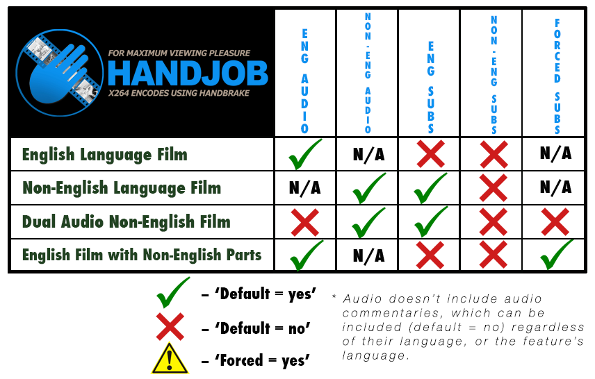
Terminology
- A glossary of common terms used in encoding: Show
4K: A display resolution used by the cinema industry to denote a 4096 × 2160 pixels (1.9:1 AR) sized frame. This nomenclature is also used erroneously by the commercial electronics industry in the sale of 3840 × 2160 displays. In the latter case, UHD, or 2160p is preferred.Anamorphic: A method of storing video on a DVD at a crushed resolution (known as the Storage Aspect Ratio) before instructing a player to stretch out the image to another resolution (known as the Display Aspect Ratio). This enables DVDs to play videos wider, or taller than DVD specifications allow. Comparison: Show
Aspect Ratio (AR): A description of the shape of the video's frame. AR is measured by calculating the number of horizontal pixels which are used for a corresponding set of vertical pixels. For example, 16:9 means that for every 16 pixels across, there are 9 pixels down; 4:3 is 4 pixels across for every 3 down. Some Common Aspect Ratios: ShowStorage Aspect Ratio (SAR)Display Aspect Ratio (DAR)
Bitrate: The amount of data which is required to display video or produce audio. If this is too high, an encode will be 'bloated'; if it's too low, then detail will be lost and defects may occur in the picture or sound. See the intended resolution's quick reference guide above for further details.Constant Rate Factor (CRF): A setting in encoding where you choose the desired level of quality and the encoder automatically adjusts the bitrate throughout to achieve this level. A higher number (such as CRF 22) results in more compression and a lower average bitrate, whereas a lower number (such as CRF 17) will give you less compression and a higher average bitrate. The necessary setting for this will vary depending on the source.Core (audio): Lossless audio (such as Dolby TrueHD and DTS-HD) contains 2 data streams combined. The first is the 'core' which is a lossy stream, the second is the 'residual' stream which contains the extra data added to the core to make it lossless. This allows players which don't, for example, support DTS-HD, to still be able to play the DTS lossy core.Cropping: The removal of pixels from any of the four edges of a video's frame. Common reasons to crop include the removal of black bars and dirtypixel lines. Cropping should always be done in even numbers. PTP prefers a 1px overcrop to a 1px undercrop.DAR (Display Aspect Ratio): See 'Anamorphic'.Default (audio/subs): An audio track or subtitle track within a container file (such as an .mkv) which a player is instructed to use automatically. Only one audio, and one or no subtitles should be set as default. See the FAQ for further details.Dirtypixel: A line of discoloured pixels running down or across the edge of a video frame. If these are present throughout all or most of a film, they will need to be removed via cropping. See Example: Show4:3
16:9 (Full Frame)
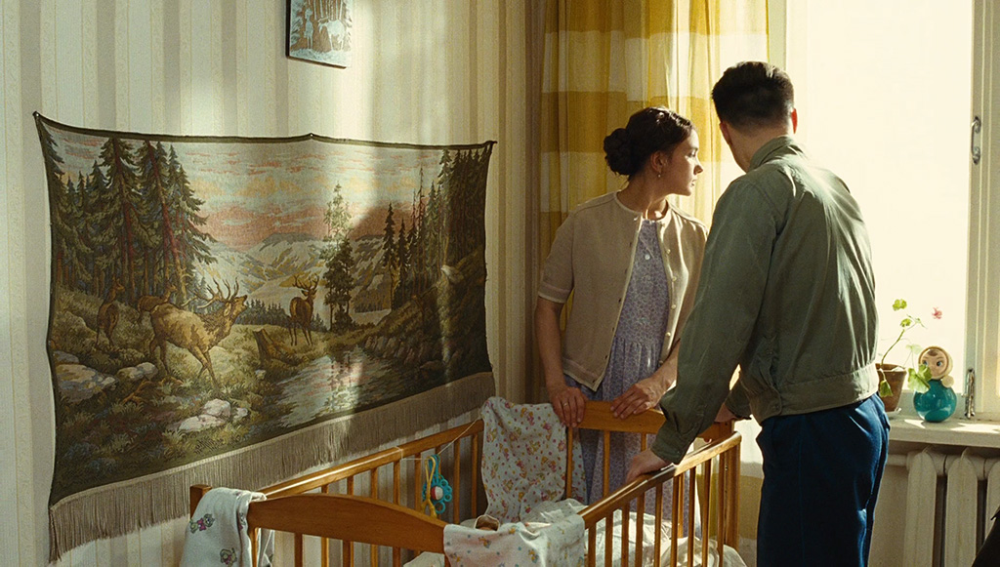
1.85:1
2.35:1
2.40:1
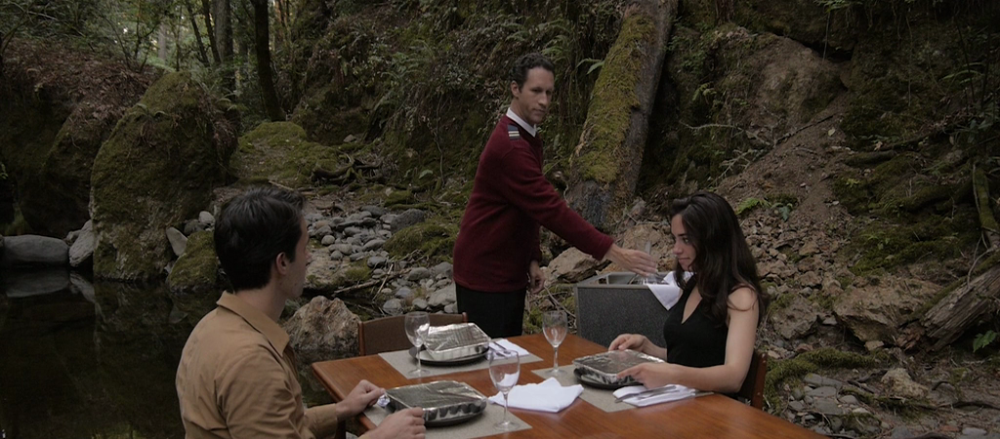
Dual Audio: An encode of a non-English film which contains both the original language audio track as well as the English dub on a second track.Dub: An audio track which features dialogue in a different language to a film's original language which is synchronised to match the actors. Only English dubs are allowed on PTP.Duplicate Frames: Something which can occur in encodes with a framerate of 29.970 fps. Handbrake's 'Same as Source' framerate setting can sometimes incorrectly output at 29.970 when it should be 23.976. This results in a duplicate image frame being produced every 4 frames and will result in jerky playback. See the FAQ for information on how to detect and correct these.DVD5: Often referred to as a single-layer disc. A DVD, or a rip of a disc which holds up to 4.7 GB of information. Scene groups will often release DVD9s as DVD5s by stripping away menus and extra features. They might also compress the video of the main feature. If they do the latter, these are not valid as a source for encoding (see 'Transcode').DVD9: Often referred to as a dual-layer disc. A DVD, or a rip of a disc which holds up to 8.7 GB of information. These are usually valid sources for encoding.Forced (Flag) Subtitles: These are subtitles which a player is instructed to display automatically in the event of a non-English scene or dialogue within an English language production. In some cases, it will be the director's decision to withhold this translation from the audience for artistic reasons. If forced flag subtitles are available, then these should be set to play with the 'default = yes' tag in an encode. See the FAQ for further details.Framerate: The number of still images displayed (measured in 'fps' or 'frames per second') so as to create the illusion of movement. A film's framerate depends on country of production, the media it's stored on and the technology it was produced for. Common framerates are 23.976 fps and 29.970 fps (North America) and 25 fps (Europe).Full Frame: Video with a 16:9 (1.77:1) aspect ratio which uses both the maximum width and the maximum height for its resolution.Interlaced: A technique for doubling the perceived framerate of a video without needing any extra data. Common on TV and DVDs, but growing rarer on HD media/broadcasts. One frame will display half the image (all the even-numbered horizontal pixel lines) and the next frame will display the other half (all the odd-numbered lines). When encoding, we remove this technique (deinterlacing) to output a 'progressive' video. Handbrake's ability to deinterlace effectively is presently one of its biggest weaknesses.Lossless (audio): Audio which has not been compressed. Common formats include: FLAC, LPCM, PCM, DTS-HD and Dolby TrueHD.Lossy (audio): Audio (or sometimes used in the context of video, see 'Transcode') which has already been compressed. Common formats for lossy audio include: AC3, DTS, AAC and Vorbis.Minimum Settings: A list of specifications which PTP expects encoders to adhere to so as to ensure a reasonable level of quality and compatibility in their encodes. Copy and pasting the mediainfo log of an encode into either the upload description, or a forum post on PTP will allow the site to automatically tell you if you have met these settings. All new HANDJOB encodes must meet these minimum settings and be DXVA compatible. Illustration: ShowDirtypixel Line on Left-hand Side of Frame
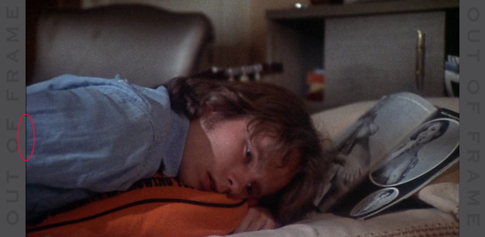
Mixdown (audio): The act of merging certain channels from a surround sound source. This should only be done when dealing with lossless audio sources which have 7.1 channels or above in order to create a 5.1 mixdown.Muxing / Remuxing: Creating or editing a container file (such as an .mkv) in order to add or remove video, audio, subtitles and chapter listings. Information about each of these tracks, as well as directions for how they should be played can also be inputted or changed. Common tools for muxing or remuxing are MKVToolNix or MKVmerge. This process does not require the re-encoding of any tracks.NTSC: A system for encoding video used in primarily in North America as well as some parts of South America. NTSC DVDs are able to store video at a resolution of 720 x 480 pixels, although this can be increased with anamorphic display. They generally play at either 23.976 fps or 29.970 fps.OCR (Optical Character Recognition): The process of converting image-based subtitles (VOBSUB or PGS) found on a retail DVD or BD to a text-based format (.srt). This will result in a smaller file size, and allow the viewer to customise the position, size, font and colour of the subtitles. Presentation will also be improved. Show Comparison: ShowDXVA Compatible / Minimum Settings Met
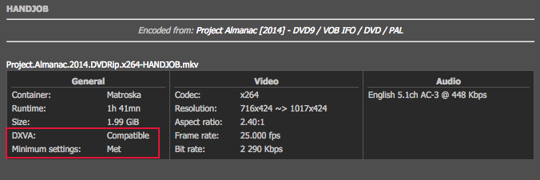Minimum Settings Not Met* Hover mouse over 'Not Met' or 'Incompatible' to show error tooltip
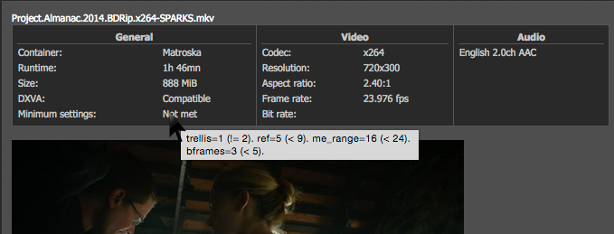
Open Matte: The director of a film usually has a specific aspect ratio in mind when filming, but the camera often shoots far more information around the intended frame. An open matte release is when this extra visual information (most often above and below the intended framing) is included to fill the full frame (16:9). Original Aspect Ratio, Open Matte: Show comparisonPAL: A system for encoding video used in Europe, Australia and parts of Africa, Asia and South America. PAL DVDs are able to store video at a resolution of 720 x 576 pixels, although this can be increased with anamorphic display. They play at 25 fps.Passthru (audio): Instructing your encoding software to create an exact copy of an audio source in your encode without applying any compression. Passthru must be used on already compressed (lossy) audio sources (see 'Transcode').VOBSUB subtitles (images) SRT subtitles (text)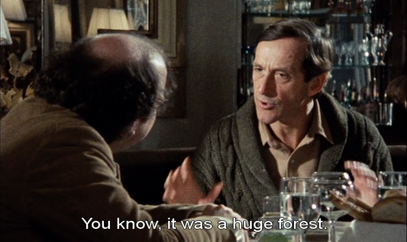PL: Abbreviation for Permanent Link. Once you've uploaded a torrent to PTP, you'll notice a PL appear next to it on the torrent group page. PLs are needed for posting your encode to the HANDJOB thread or collection.Remux: An .mkv file which contains the untouched data from the main video, audio, subtitle and chapter streams from a Blu-Ray source. Shorn of extras and menus, these files are often significantly smaller than the BD sources and, being untouched, are suitable for encoding from.SAR (Storage Aspect Ratio): See 'Anamorphic'.Source/Encode Screens: The creation and/or publishing of image sets which capture a frame from a video source (DVD, BD or Remux) and compares it within the same frame from the encoded video. This allows the encoder and others to verify the transparency of the encode.Transcoding: Re-encoding audio or video which has already been compressed (lossy). Transcoded audio or video is trumpable on PTP and as such is not allowed within HANDJOB. The only exception is for audio commentaries.Transparent: An encode which is visually indistinguishable from its source when compared at the same resolution.Trumpable: A tag assigned by PTP's torrent checkers. This means that an encode has a serious defect, and any subsequent uploads can automatically replace (trump) it without providing any further proof of superiority (see common reasons). New HANDJOB encodes must never be marked as trumpable unless it is a problem with the source (e.g. 'No English Subtitles'). If your encode receives this tag (except in the case of the exception cited), you must immediately stop seeding it and use the 'Report' function to 'Request Delete' for the affected torrent.Upscale: Converting video from one resolution (e.g. 720p) to a higher resolution (e.g. 1080p). Video scalers use different techniques ranging from simply stretching the image, to predicting detail. Upscaled films are trumpable on PTP and as such, not allowed within HANDJOB.
SRT subtitles (text)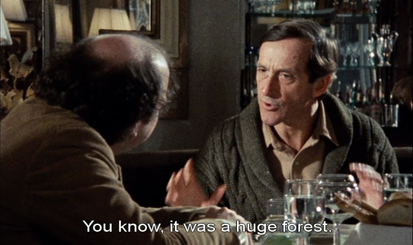PL: Abbreviation for Permanent Link. Once you've uploaded a torrent to PTP, you'll notice a PL appear next to it on the torrent group page. PLs are needed for posting your encode to the HANDJOB thread or collection.Remux: An .mkv file which contains the untouched data from the main video, audio, subtitle and chapter streams from a Blu-Ray source. Shorn of extras and menus, these files are often significantly smaller than the BD sources and, being untouched, are suitable for encoding from.SAR (Storage Aspect Ratio): See 'Anamorphic'.Source/Encode Screens: The creation and/or publishing of image sets which capture a frame from a video source (DVD, BD or Remux) and compares it within the same frame from the encoded video. This allows the encoder and others to verify the transparency of the encode.Transcoding: Re-encoding audio or video which has already been compressed (lossy). Transcoded audio or video is trumpable on PTP and as such is not allowed within HANDJOB. The only exception is for audio commentaries.Transparent: An encode which is visually indistinguishable from its source when compared at the same resolution.Trumpable: A tag assigned by PTP's torrent checkers. This means that an encode has a serious defect, and any subsequent uploads can automatically replace (trump) it without providing any further proof of superiority (see common reasons). New HANDJOB encodes must never be marked as trumpable unless it is a problem with the source (e.g. 'No English Subtitles'). If your encode receives this tag (except in the case of the exception cited), you must immediately stop seeding it and use the 'Report' function to 'Request Delete' for the affected torrent.Upscale: Converting video from one resolution (e.g. 720p) to a higher resolution (e.g. 1080p). Video scalers use different techniques ranging from simply stretching the image, to predicting detail. Upscaled films are trumpable on PTP and as such, not allowed within HANDJOB.
4. Step-by-Step Guides
These guides will be focussed on encoding with a Windows-based operating system. If you are using MacOS, please see:
- Wiki > The HANDJOB Guide to DVDRips for Mac (Beginner Friendly)
- Wiki > The HANDJOB Guide to BluRay Encodes for Mac (Beginner Friendly)
Source Preparation & Setting Up
- Ripping the Source Disc – Guide: Show
If you are working with a copy of a retail optical disc such as a DVD or a Blu-Ray, you will likely find it necessary to rip a copy of it to your computer's hard disk. Not only is this better for your optical disc drive, it also allows you to circumvent the encryption, copy protection and region protection on the disc which can prevent problems occurring during the encoding process.
If you haven't already, download AnyDVD from the software section and follow the install instructions. Then click on your application extensions tray and right-click the AnyDVD logo. Then select 'Rip Video Disc to Hard-Disk' (below illustration uses Windows 7, your GUI may vary).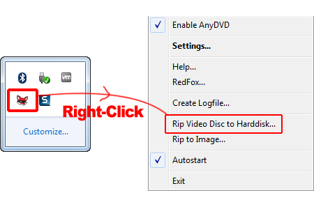You will then be given the chance to select a location for the creation of the local copy and the copying process will begin. This may take a while depending on the size of the disc, the speed of your optical disc drive and other hardware factors.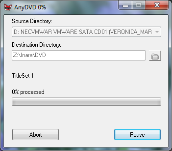 - Handbrake Preferences – Guide: Show
First of all, you'll need to verify and/or edit a few settings in Handbrake before proceeding. Hit 'Tools', then 'Preferences' and match the settings below:
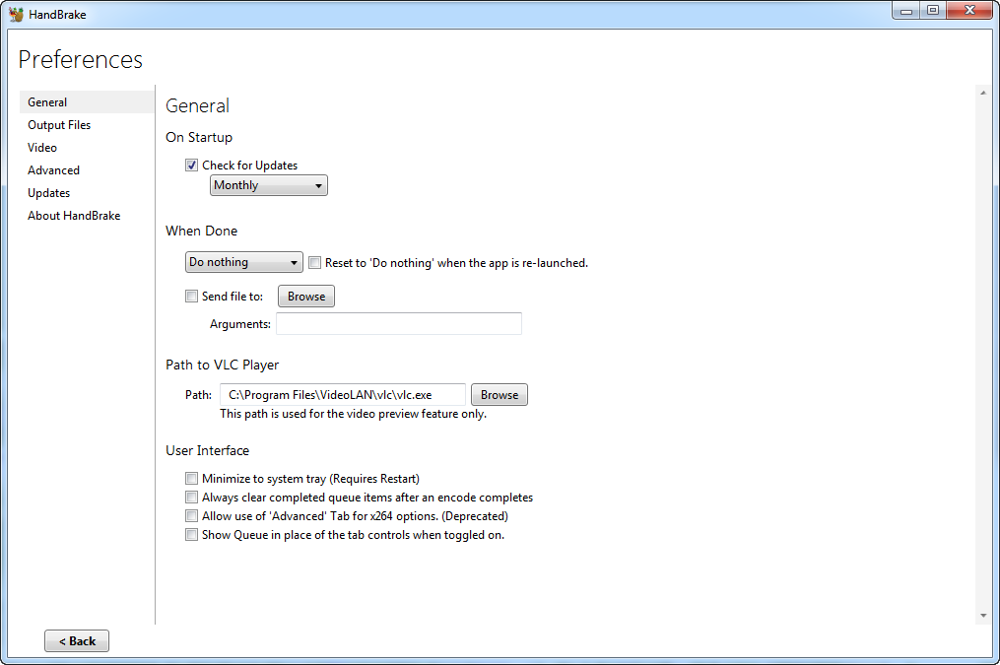There shouldn't be much to change above, but note that since the 'Advanced Tab' feature is now considered deprecated by Handbrake (marked for removal in a future update), unlike previous guides, we will no longer be using this functionality.Now click on the 'Advanced' submenu.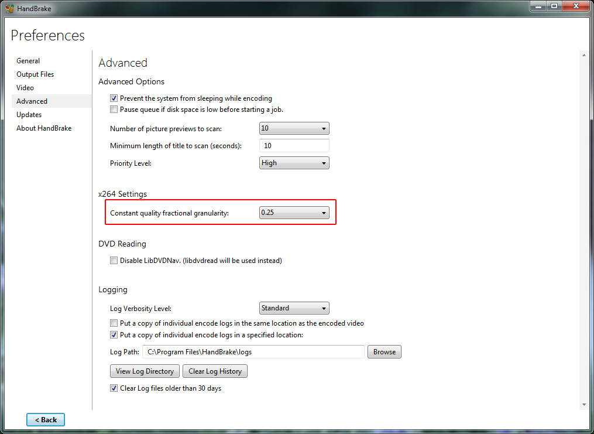The option highlighted above allows us to make smaller adjustments to the CRF value when encoding. This is the main way of controlling the quality/efficiency of our encodes and as such, a lighter touch is necessary.Enabling the storing of log files in a specified directory is also recommended. This can help in the diagnosis of a problem with the encoding process should one arise. - Cropping – Guide: Show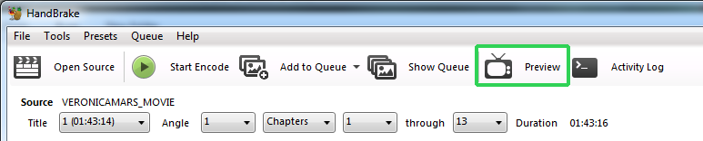Hit the 'Preview' icon and you should see the following screen: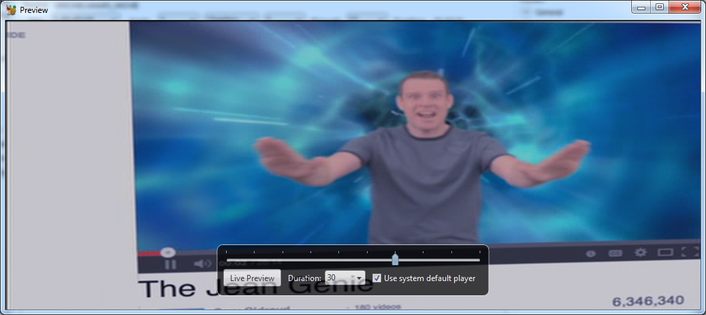You can use the 'Still Preview' screen if you wish, but this sometimes has issues display the output correctly (as evidenced by the squashed image here), so we're going to use 'Live Preview' instead. This will make a quick test encode and then export that to your designated video player (in our case: VLC).The purpose of cropping is to remove from the final encode:1.) Any black bars which may appear on the left- or right-hand side of the frame, or the top and bottom of the frame (see red circles below)2.) Any lines of discoloured pixels on the edge of the frame3.) Any other imperfections, such as the crimping line showed below (in the orange circle)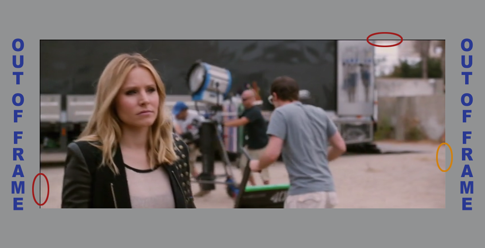To rectify the severe issues (in red) and the moderate issues (in orange) above, we need to adjust our cropping settings. So we need to close VLC and Live Preview, return to the Picture tab in Handbrake and adjust our cropping settings until we have a nice crisp edge on all four sides of the frame (in this case, removing more pixels from the left, right, and top of the frame, as below: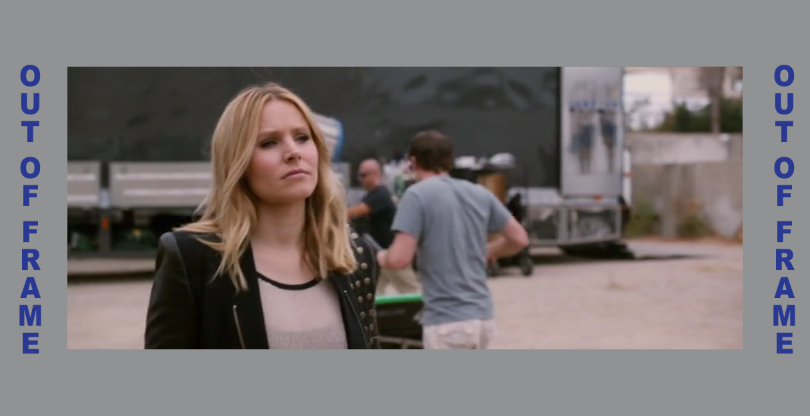It is important that you remove all imperfections from the final encode without cropping more than is absolutely necessary. Considering that we only ever crop in even numbers (i.e. 2 pixel lines at a time), in a case where only 1 pixel line is causing an issue, it is better to overcrop by 1px, than to leave the 1px undercrop.
Encoding from DVD
- Setting up a DVD Encode – Guide: Show
DimensionsAt the time of writing, recent versions of Handbrake have some minor issues with how it handles resolution calculation. Therefore, we will need to exercise caution when setting up this tab. Keep the following three rules in mind to ensure an accurate encode:1.) Anamorphic: Loose -> Modulus: 22.) The PAR value of the source must match the PAR value of the output (see red boxes)3.) The values in the 'Size -> Width/Height' boxes must equal the 'Source' resolution minus the cropping values (see blue boxes/arrows)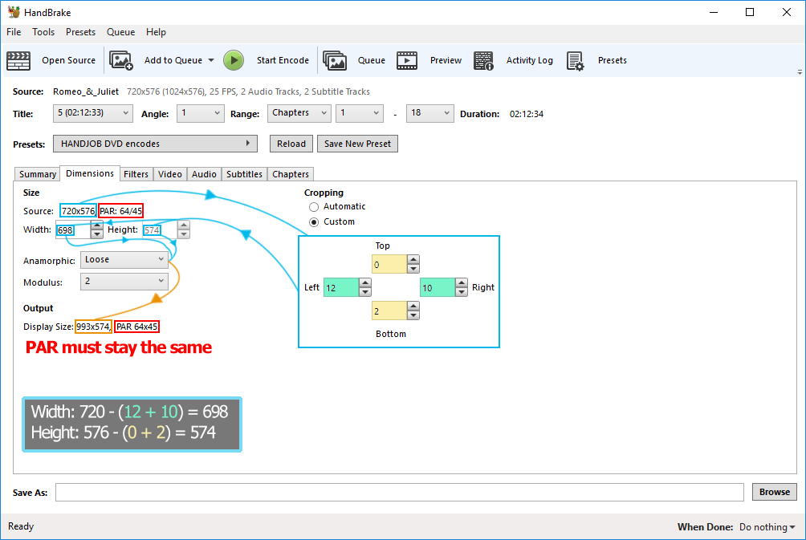Let's take another example. In the image below the calculation is incorrect. After applying the correct cropping settings (see section 'Cropping' below for further details), the source's PAR no longer matches the output's (changing from 64/45 to 65535/46118). The reason for this is that the source resolution is 720 x 576, the cropping settings which affect the width (left and right) are each removing 2px for a total subtraction of 4px, yet the width setting is still 720px.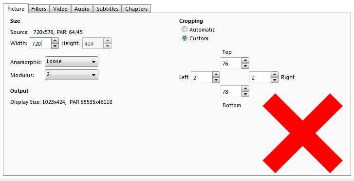Given that using 'anamorphic = loose' locks the height setting, we only need to focus on the width. With a source of 720px and cropping removing a total of 4px (Left and Right combined), our width size setting should be 716px. You may need to manually enter this number into the box. This should result in the correct PAR appearing.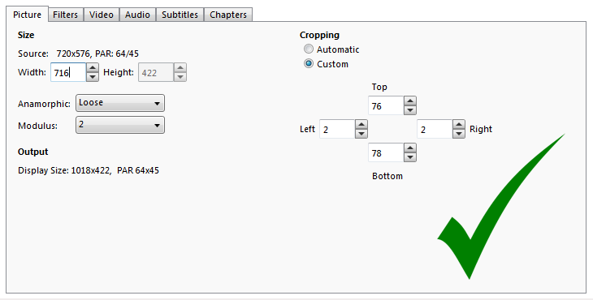
FiltersOn the 'Filters' tab, you should generally use the following settings. With them, Handbrake will automatically detect when each filter is needed and apply them accordingly. You should not use 'Denoise', 'Sharpen' or 'Deblock' here, unless advised to by an experienced member of the HANDJOB group.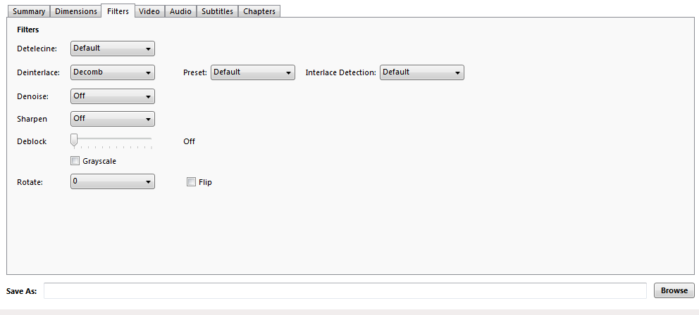– Detelecine: Default– Deinterlace: Decomb -> Preset: Default -> Interlace Detection: Default– Denoise: Off– Sharpen: Off– Deblock: Off– Greyscale: Unticked (only use if dealing with an entirely black and white source)– Rotate: 0 -> Flip: UntickedWith the deprecation of the advanced options panel, we need to fine tune our settings somewhere else, and the Video tab is now the place to do it. It is also where we set the CRF of the encode. This stands for 'Constant Rate Factor' and dictates how much compression is applied to the encode. CRF 17 is a good place to start, although you may end up with anything from CRF 22 -> CRF 15 after testing. The higher the number, the more compression is applied and the lower the resulting filesize. So CRF 22 will give you a far smaller output file size than CRF 15, but CRF 15 will be higher quality. We use testing (dealt with later) to find a good balance between file size and quality.On this tab, set the following options:
Video– Video Codec: x264– Framerate: Same as Source -> Constant Framerate– Quality: Constant Quality (CRF 17 recommended as initial setting)– Encoder Preset: Placebo– Encoder Tune: None -> Fast Decode: Unticked– Encoder Profile: High– Encoder Level: 4.1– Extra Options: Copy and Paste the settings below.subme=10:deblock=-3,-3:me=umh:merange=32:mbtree=0:dct-decimate=0:fast-pskip=0:aq-mode=2:aq-strength=1.0:qcomp=0.60:psy-rd=1.0,0.00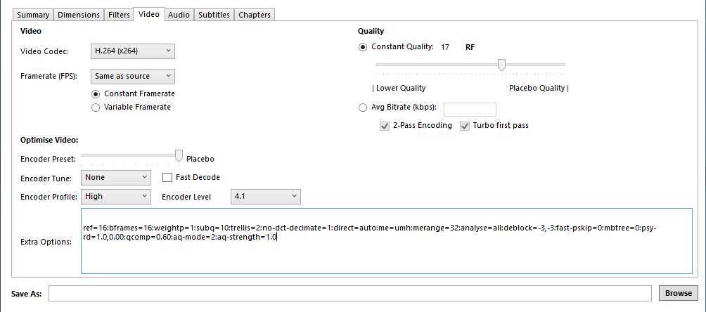Note: If you're encoding an NTSC DVD, please go through the next step-by-step guide, entitled Checking for Duplicate Frames on a DVDRip.
AudioAll DVDs should contain an AC3 track as the main audio. Since this has already been compressed, you should not apply any more compression. Instead, use 'AC3 Passthru' to pass through the audio to the final encode without any alteration.Main Audio– Codec: AC3 PassthruThere may be occasions, such as when encoding a music concert DVD, when the main audio carries the option of a PCM or LPCM stream. For concerts only, you may convert this (L)PCM stream to FLAC (16 bit) or use the AC3 version as above. Do not include both.Main Concert Audio– Codec: FLAC (16 bit)or– Codec: AC3 Passthru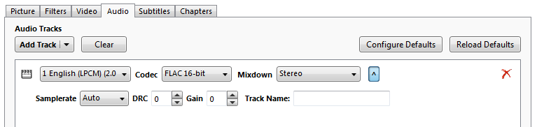If there is an audio commentary present on your source DVD, this should also be included. However, since this is secondary audio, we can apply further compression to this track to optimise our file size further. Select:Secondary AudioYou can leave 'Mixdown', 'Sample Rate', 'DRC' and 'Gain' unchanged from their default settings. If you're not sure who's participating on a commentary track, please consult either the rear artwork, or listen to the introduction of the audio track. Spelling of names can then be verified at the film's respective IMDb page. You may also be able to find this information at DVD Compare.– Codec: AAC– Bitrate: Either 80 or 96 Kbps (or '-V 63' with QAAC)– Track Name: Commentary with [Job Title] [First Name] [Surname]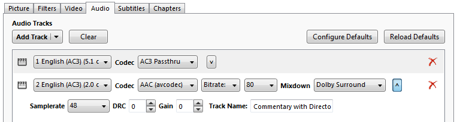If you're encoding a non-English language film, then the original language is the main audio. If an English dub is also present, this may also be included using the same settings as the main audio (Dual Audio encode). The original language audio track should remain in top position on the audio list with the English dub following in second. Dubs in any other languages should not be included in any circumstances.
SubtitlesAt this point you need to decide which subtitle tracks you are going to convert from image-based (as stored on the DVD) to text-based (as an .srt stream within your encode's .mkv container) via the process of Optical Character Recognition. We recommend OCR-ing at least the English subtitle track, especially when encoding a non-English language film. We do not recommend OCR-ing non-Latin based languages (e.g. Cyrillic-based language, Arabic, or other script languages) unless you are very familiar with their writing systems.If you plan to OCR a subtitle stream, then you do not need to include it with Handbrake (we will do so during the OCR-ing guide). If you do not plan to OCR a subtitle stream, then include it as below: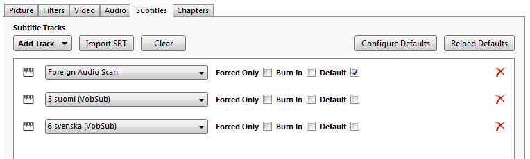The 'Foreign Audio Scan' option will attempt to scan the source to see if there are any 'Forced Flag' subtitles, i.e. English subtitles which translate a non-English scene or scenes in an otherwise English-language production. You can include this scan if you wish, but no matter what you include at this stage, no subtitles should have the 'Burn In' or 'Forced Only' boxes ticked. The single instance where 'Default' should be ticked is if you're including a non-OCR'd English subtitle track in a non-English film.
ChaptersThere are a few places you can look to find chapter names for your encode:1.) On the DVD itself in the Scene Selection/Chapters submenu.If you are unable to find any chapter names using the above methods, then you should include generically named ones as below:2.) By searching at Chapter DB3.) By checking with certain online retailers such as Barnes & Noble under the item's Scene Index tab.
- Checking for Duplicate Frames on an NTSC DVDRip – Guide: Show
NTSC format, the one used in North American territories (amongst others) can sometimes give us 'duplicate frames'. So if you're encoding a PAL DVD – which runs at 25fps – (Europe et al.), this does not apply. You should always do a test encode of a minute or two before encoding the whole film, so load your test encode up in Mediainfo, and see what your framerate is...
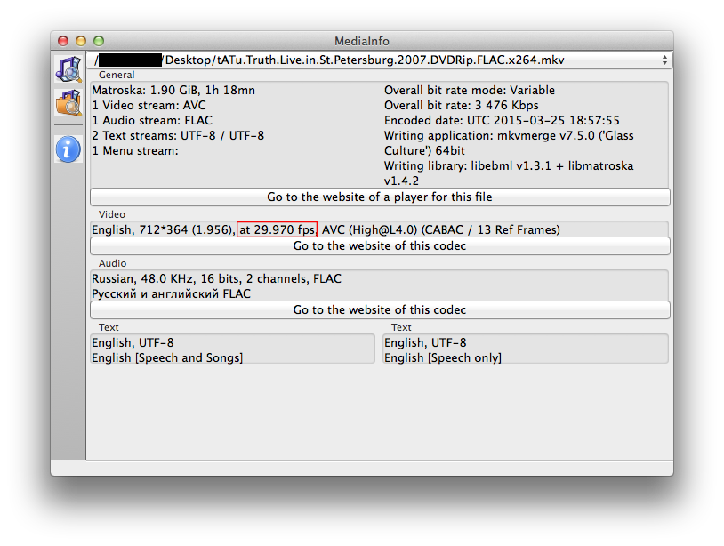If it says your framerate is like above (29.970 fps) then we need to test for duplicate frames. If it says your framerate is something else, run this test anyway, just in case something else is wrong. So load your test encode (not the source) into VLC, find a scene with visible motion in, and pause the film. Then, we can use the 'e' key to move forward one frame at a time. We need to make sure that every time we press 'e' (or the right arrow key in MPC), we get a new frame (something moves or changes). Check at least 20-30 consecutive frames to be sure there are no duplicates. On occasion though, you might get the pattern below (Click 'show comparison' and move your mouse from left to right to simulate a frame-by-frame advance)...Frame1, Frame2, Frame3, Frame4, Frame5, Frame6: Show comparisonDid you notice how frame 4 and 5 were identical? If – and only if – you get the same pattern as above, then we need to change something for this source. So move back to Handbrake and select the 'Video' tab. Then you need to change the FPS from 'Same as Source' to '23.976' as shown below. 'Constant Framerate' should always be used.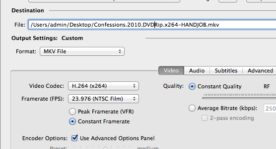If you get duplicate frames in a different pattern than the one outlined above, seek advice before going any further. - OCR-ing DVD Subtitles with SubRip – Guide: Show
If you haven't already, download SubRip (see Software) and install it to your computer. Now follow the 3 clicks below:
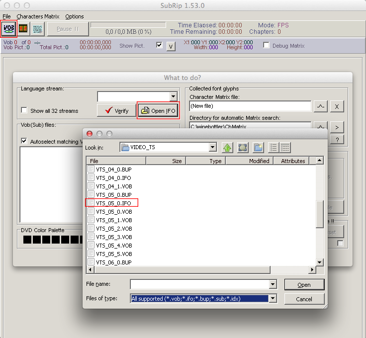When you get to the file list, it will vary from DVD to DVD which file you need to choose. First, make sure they're ordered by name, then select 'All supported files'. What we're looking for is the largest group of .VOB files. Here, you can see there are 6 grouped in a row. When you've found that largest group, select the nearest .ifo file above them.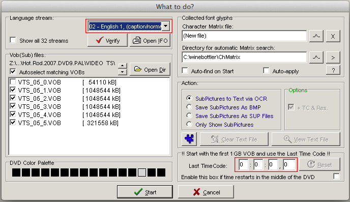When the screen above has loaded, select a language stream (start with English), make sure that the time code (bottom-right) is at 0 (otherwise hit the 'Reset' button next to it). If the 'Clear Text File' button is not greyed out, click that too (this makes sure you have a clean SRT file to work with, 1 for each language). Then, hit 'Start'.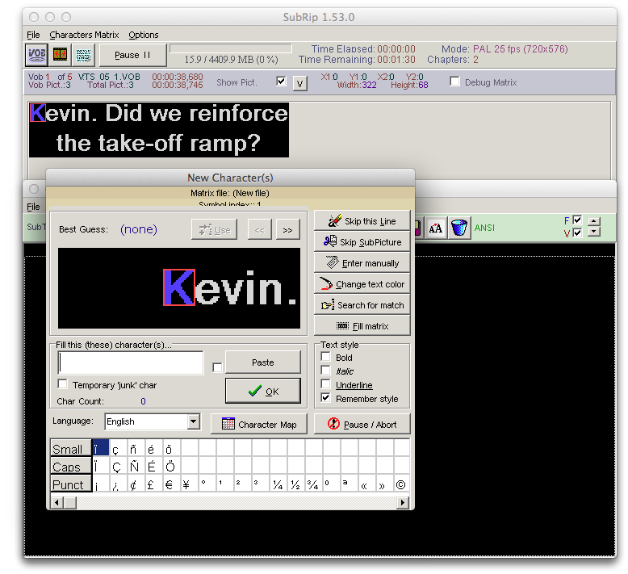Now, what you're doing here is teaching the program to recognise each individual letter. It will highlight what it wants to know (the letter 'K' is the above image), and your job is to enter the 'K' into the text box. Pay attention to whether it's upper or lower case. If the letter is in italics, then make sure to tick the italics box too. Sometimes you'll get more than one letter at a time, if this happens, enter them all into the text box. As you enter more letters, the program will get better at recognising the letters itself.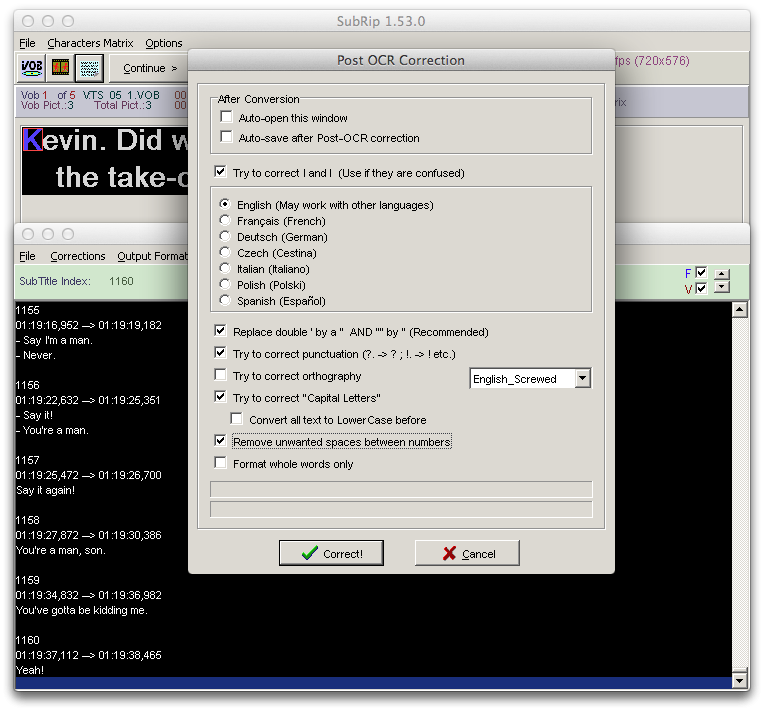When the entire film has finished OCR-ing, select 'Corrections', then 'Post-OCR Corrections'. Tick all the options above (if you're running a non-English track that's listed – French, German, Czech, Italian, Polish, Spanish – select it, if not, try it on English). Hit 'Correct'. When it's done, select 'File' on your output window, then 'Save As' to save your OCRed SRT file. Make sure to note which language it is in the title.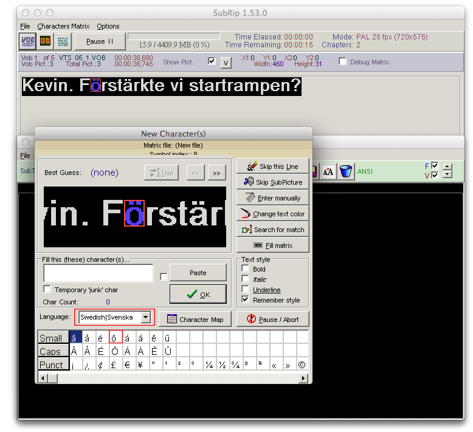Repeat the process by hitting the VOB icon and choosing the next language stream, making sure to reset the time-code and clear the text file. The program will remember all the letters from your English track, so you'll only have to enter in the letters not present in the English alphabet. Fortunately SubRip has character sets for each language allowing you to easily find and select them, as illustrated above.
Encoding from Blu-Ray
- Setting up a Blu-Ray Encode – Guide: Show
PictureAt the time of writing, recent versions of Handbrake have some minor issues with how it handles resolution calculation. Therefore, we will need to exercise caution when setting up this tab. First of all, set the following settings, applicable for all resolution encodes:Keep the following rules in mind to ensure an accurate encode:– Anamorphic: none– Modulus: 2– Keep Aspect Ratio: ticked1.) The PAR (Pixel Aspect Ratio) for Blu-Ray encodes will generally be 1:1 (see red boxes)2.) For 1080p encodes, the output display size should equal the source minus cropping (see blue boxes)3.) For 480p, 576p and 720p encodes, at least one of your output width or height should equal the maximum for your resolution4.) For 480p, 576p, and 720p encodes, neither the output width or height should be over the maximum for your resolution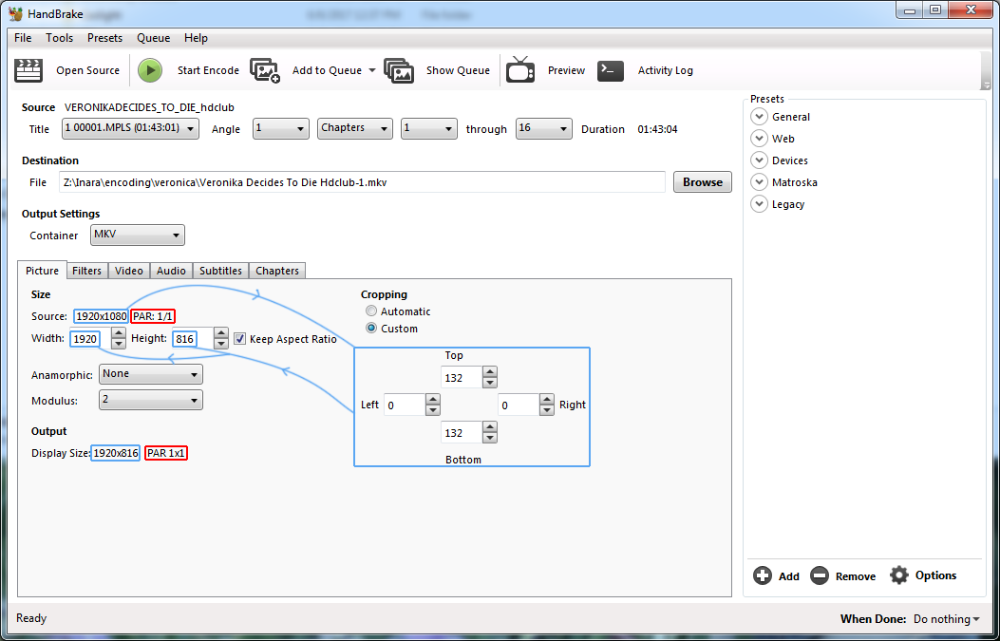Maximum Resolutions– 480p: 854 x 480– 576p: 1024 x 576– 720p: 1280 x 720– 1080p: 1920 x 1080Example 1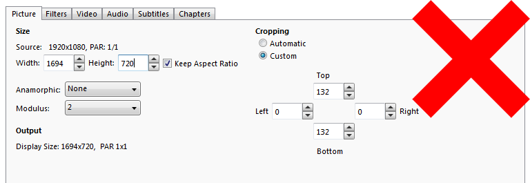Error: Width is over the maximum for 720p!In the example above, the encoder is seemingly aiming to encode a 720p encode, as evidenced by their chosen height. However, the rule is that neither the width, nor the height can be over the maximum for their chosen resolution (which for 720p is a maximum width of 1280 pixels and a maximum height of 720 pixels). In this case, the width should be dropped to the maximum and the height will then be recalculated by Handbrake to maintain the aspect ratio of the source.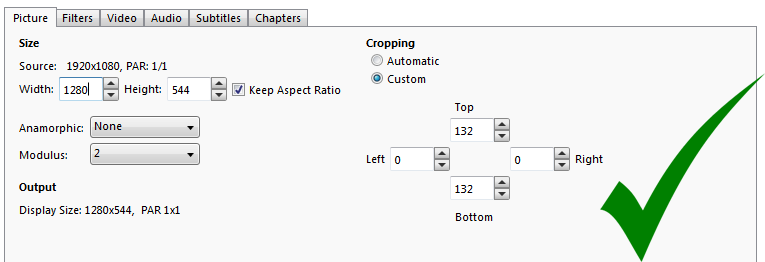Example 2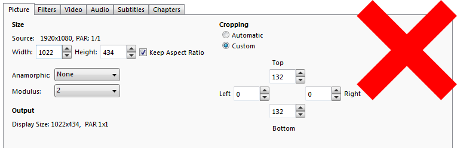Error: Neither measurement equals the maximum!This time the encoder looks to be aiming for a 576p. However, they have not ensured that at least one of the output height or width is equal to the maximum for that resolution (1024 x 576) with the width being 2px under the maximum. The correct output resolution would be: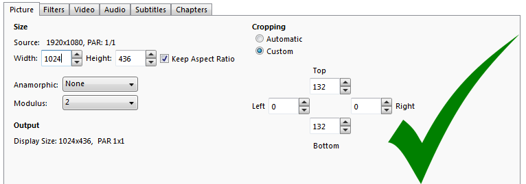
FiltersOn the 'Filters' tab, you should generally use the following settings. With them, Handbrake will automatically detect when each filter is needed and apply them accordingly. You should not use 'Denoise', 'Sharpen' or 'Deblock' here, unless advised to by an experienced member of the HANDJOB group.– Detelecine: Default– Deinterlace: Decomb -> Preset: Default -> Interlace Detection: Default– Denoise: Off– Sharpen: Off– Deblock: Off– Greyscale: unticked (only use if dealing with an entirely black and white source)– Rotate: 0 -> Flip: UntickedWith the deprecation of the advanced options panel, we need to fine tune our settings somewhere else, and the Video tab is now the place to do it. It is also where we set the CRF of the encode. This stands for 'Constant Rate Factor' and dictates how much compression is applied to the encode. CRF 17 is a good place to start, although you may end up with anything from CRF 22 -> CRF 15 after testing. The higher the number, the more compression is applied and the lower the resulting filesize. So CRF 22 will give you a far smaller output file size than CRF 15, but CRF 15 will be higher quality. We use testing (dealt with later) to find a good balance between file size and quality.On this tab, set the following options:
Video– Video Codec: x264– Framerate: Same as Source -> Constant Framerate– Quality: Constant Quality (CRF 17 recommended as initial setting)– Encoder Preset: Placebo– Encoder Tune: None -> Fast Decode: Unticked– Encoder Profile: High– Encoder Level: 4.1– Extra Options: Copy and Paste the settings below.subme=10:deblock=-3,-3:me=umh:merange=32:mbtree=0:dct-decimate=0:fast-pskip=0:aq-mode=2:aq-strength=1.0:qcomp=0.60:psy-rd=1.0,0.00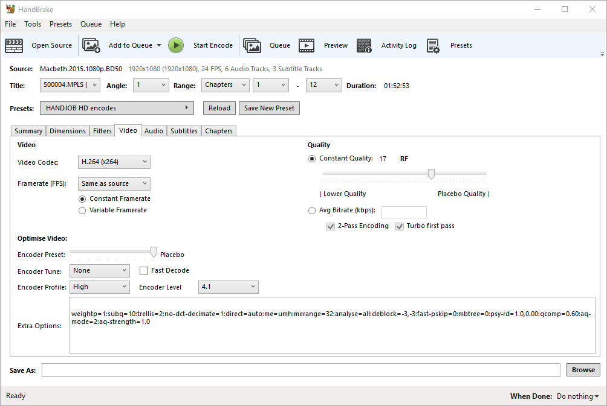
AudioThe vast majority of Blu-Rays contain lossless high-definition audio such as DTS-HD and True-HD. Unfortunately, Handbrake is not capable of handling these correctly at present and so we must use alternative software to encode our audio. Please see the step-by-step guide entitled 'Encoding HD Audio with eac3to'.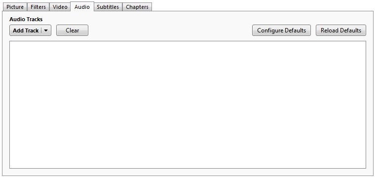If there is an audio commentary present on your source Blu-Ray, this should also be included. Since this is secondary audio, we can apply further compression to this track to optimise our file size further. Select:Secondary AudioYou can leave 'Mixdown', 'Sample Rate', 'DRC' and 'Gain' unchanged from their default settings. If you're not sure who's participating on a commentary track, please consult either the rear artwork, or listen to the introduction of the audio track. Spelling of names can then be verified at the film's respective IMDb page. You may also be able to find this information at DVD Compare.– Codec: AAC– Bitrate: Either 80 or 96 Kbps (or '-V 63' with QAAC)– Track Name: Commentary with [Job Title] [First Name] [Surname]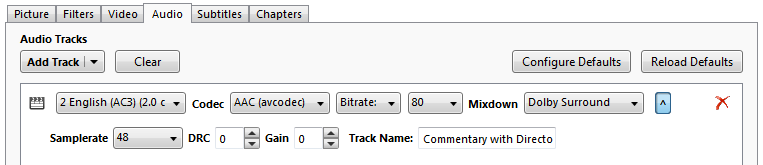
SubtitlesThere is only one instance in which it is appropriate to use Handbrake to include subtitle streams for a Blu-Ray encode:1.) You are encoding at 1080pIf both of these are true, then you may add the streams to your encode. Be sure to leave all boxes unticked unless it is an English subtitle stream for a non-English language film, then you should tick 'Default'.If you plan to OCR a subtitle stream, or if you are encoding at 480p, 576p or 720p, then you do not need to include it with Handbrake. Instead, please follow the 'Subtitles' step-by-step guide.and2.) You do not intend to OCR the tracks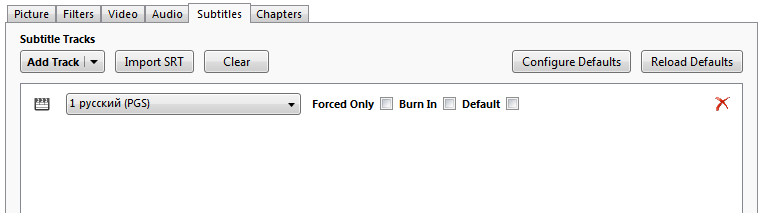The 'Foreign Audio Scan' option will attempt to scan the source to see if there are any 'Forced Flag' subtitles, i.e. English subtitles which translate a non-English scene or scenes in an otherwise English-language production. You can include this scan if you wish.
ChaptersThere are a few places you can look to find chapter names for your encode:1.) On the Blu-Ray itself in the Scene Selection/Chapters submenu.If you are unable to find any chapter names using the above methods, then you should include generically named ones as below:2.) By searching at Chapter DB3.) By checking with certain online retailers such as Barnes & Noble under the item's Scene Index tab. - Encoding HD audio with eac3to – Guide: Show
First of all, you need to download eac3to which can be found in the Software section of this guide. If you're going to be encoding AAC, then you'll need QAAC and AppleApplicationSupport from the same section too. Eac3to is run via Command Prompt. You can launch Command Prompt in Windows 10 by typing 'cmd' into the File Explorer address bar.Once it's opened, you need to navigate to the folder where you installed eac3to (which should be the folder where you dropped QAAC as well). We use the 'cd' function to navigate in Command Prompt (CMD). You can return to your root folder by typing 'cd /.' and then navigate to your eac3to folder, as below:
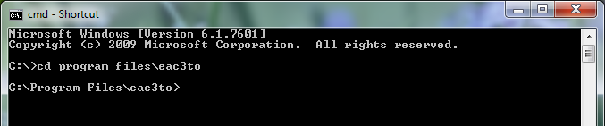Navigating the Playlists
Now type 'eac3to ' and drag and drop your Blu-Ray folder onto the CMD window. This will insert the file path into your command. Once it appears, hit Enter and a playlist should appear.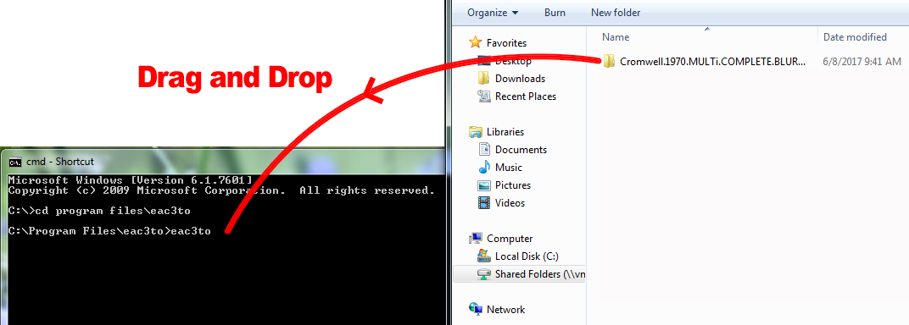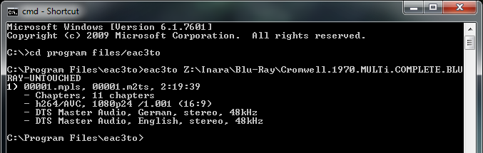If your Blu-Ray folder gives you more than one playlist, then you can usually select the correct one by choosing the one with the longest running time. To select the playlist, simply repeat the previous command, and add the playlist number, followed by a closing bracket. To retrieve previously entered commands in CMD, simply press the 'Up' cursor key.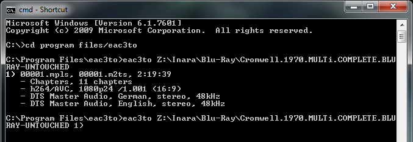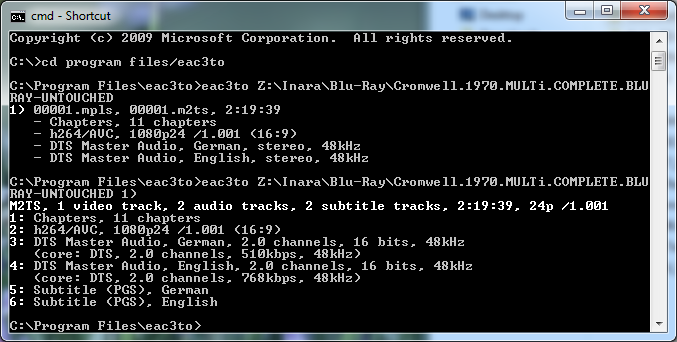Encoding AC3 Audio
If your track is 5.1 channels, then you'll need to encode it to AC3. For 480p and 576p this will be with a bitrate of 448 Kbps; for 720p and 1080p encodes, use 640 Kbps.Repeat the command from above, then type the number of the audio track you wish to encode (usually labelled 'Master Audio' or similar) followed by a colon. Make sure you choose the original language audio (or an English dub if you're encoding a Dual Audio encode). After the colon, choose where to write the new file and type the extension '.ac3'. Finally, select the bitrate by typing '-448' or '-640' depending on needed bitrate.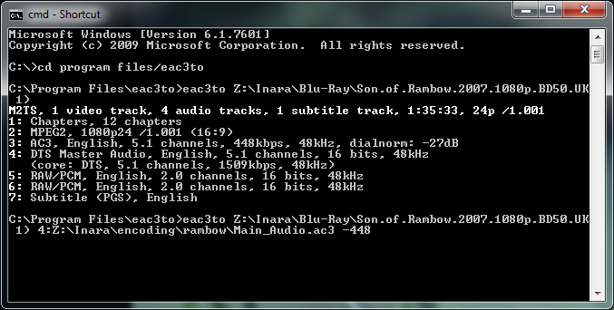So to recap, the code structure is as follows:where x = playlist number; y = audio track number and z = bitrate. Press Enter to execute your command and eac3to will create your new audio track which can then be muxed in to your final encode.eac3to C:\Path\to\BluRay_folder x) y:C:\Path\to\output_file.ac3 -z Encoding AAC Audio
Encoding AAC Audio
Creating AAC audio – necessary if you're working with a stereo or mono track, or if you have an audio commentary to include (although you can also use Handbrake for these since they are secondary audio) – is a slightly different process since we need to use two programs simultaneously to create a track. One to decode (eac3to) and one to encode (QAAC). We do this by means of a 'pipe' which feeds the output of one program to the next program. First follow the steps above in 'Navigating Your Playlist' until you have a list of audio tracks. Then copy and paste the following command (using your own file locations):where x = playlist number; y = audio track number. Pay attention to the QAAC commands, ensuring you use the correct case in the commands, the correct number of hyphens, and the final trailing hyphen also.eac3to C:\Path\to\BluRay_folder x) y:stdout.wav | qaac -V 127 -i --no-delay -o C:\Path\to\output_file.m4a -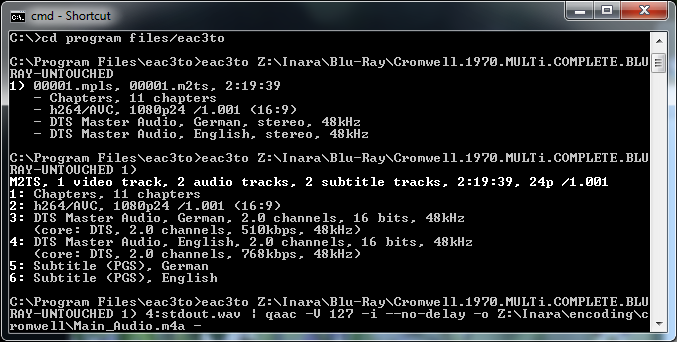If you're encoding a commentary track, swap '-V 127' for '-V 63'. Run the command and your AAC stream will be created, ready for muxing into your final encode.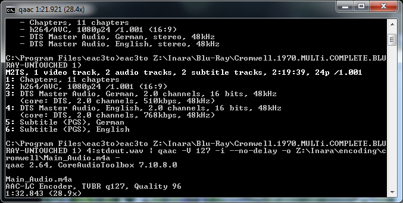Encoding FLAC Audio
In the case of concerts, or for some 1080p encodes, you may wish to convert the main audio to FLAC format. This is a highly efficient, yet still lossless, audio codec. The process is fairly simple and just requires using .flac as the extension of the target file in eac3to.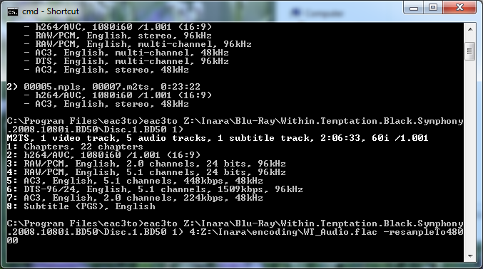In this example, we have also used the command-resampleTo48000. This is due to the main audio having a sample depth of 96,000Hz, which is unnecessary for our purposes. This command will not be needed in most cases.where x = playlist number and y = audio track numbereac3to C:\Path\to\BluRay_folder x) y:C:\Path\to\output_file.flac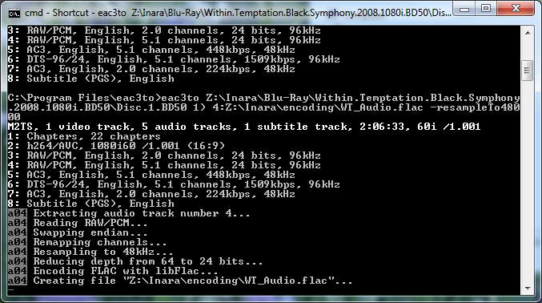You may also find Wiki > Audio bit-depth reduction and sample rate conversion useful for further improving file size when working with 24 bit audio streams. - OCR-ing Subtitles: Blu-Ray with SupRip – Guide: Show
Before we can OCR using SupRip, we need to extract the subtitle file using eac3to. Follow the step-by-step guide for 'Encoding HD audio with eac3to until you get the stream list for your chosen playlist. Then use the command:
where x = playlist number and y = the ID of your subtitle stream. Below we're extracting the English subtitle track from a Blu-Ray folder.eac3to C:\Path\to\BluRay_folder x) y:C:\Path\to\subtitle.sup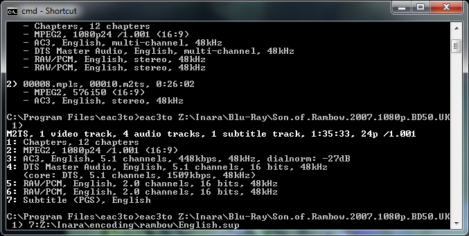Now load SupRip, which you can find in the Software section. When the main screen loads, click 'Open' and load the .sup file that you extracted with eac3to, as shown above.This will load the .sup file and display the first subtitle image. Click 'OCR' and wait for the program to prompt you with a letter it doesn't recognise. Enter the letter in the text box (clicking 'Italic' if appropriate) and then hit 'OK'.Here you're teaching the program to recognise letters from the images. As you enter more, the program will become better at recognising the correct letters itself. Keep doing this until SupRip finishes the entire subtitle track. When you've finished, click the 'SRT' tab as shown below.Next, you'll need to check the options shown below and click 'Save'.Finally, name your .srt track. Try to be as descriptive as possible in the filename, since this can get confusing if you're dealing with a lot of subtitle tracks.Your first subtitle track is now complete. Repeat this process for as many of the languages available in which you feel comfortable. If you've previously installed SubRip, you might want to load your .srt file with that and run the post-OCR corrections as shown below.The final step is to run a spell-checker on your .srt file.
- OCR-ing DVD or Blu-Ray Subtitles with SubtitleEdit – Guide: Show
Having installed and launched SubtitleEdit, click on 'File' and select the appropriate command for the subtitle stream you wish to OCR. For this example, we're going to import the same .sup file we extracted using eac3to during the previous step-by-step guide ('OCR-ing Subtitles: Blu-Ray with SupRip').Select 'OCR via Image Compare' from the menu and disable the options for auto-correction and spell-checking. We'll be doing all that later on. When you're set up as below, click 'Start OCR'.This part can take a while, but should get faster the more letters you enter, and then, the more films you OCR. SE will scan the images and ask you to input which letter(s) they are. Don't forget to tick the 'Italic' box if the text is written in italics.After you've complete the OCR-ing part of the process you'll need to correct the numerous errors that inevitably appear as part of the process, so click on 'Fix Common Errors' from the Tools menu.You'll then be given a checklist of processes to run on your subtitles. While a few of these come down to personal choice, below is a good place to start. Be sure that the correct language code is selected for your subtitle file.Subtitle Edit will now search your subtitle track and present you with a list of proposed fixes according to the options you selected on the checklist. You can untick any which you don't wish to fix. Click 'Apply Selected Fixes' when you're happy with the changes to be made.Now simply save your file.The final step will be to open your .srt file in your preferred text editor and run a spell-check on it. This should pick up any straggling errors missed previously. When that's done, your file will be ready for muxing into the final encode.
- Resizing HD Subtitles with BDSup2Sub – Guide: Show
If you haven't downloaded it already, you will need to get the Java Runtime Environment to use BDSup2Sub. If you haven't extracted your .sup files yet, you'll need to use eac3to via Command Prompt to do so.The command we've used above is:
eac3to C:\Path\to\BluRay_Folder x) y:C:\Path\to\output.supwhere x = playlist number and y = track/stream ID.Once you've launched the app, you'll need to load your .sup file. When your .sup file is loaded, you'll be automatically presented with a screen where you can choose the conversion settings for your final output file.Check that your output setting is 'SUP (BD)' before starting the export process. See the red box below for where to change this.Now your resized subtitles are ready to export. Select this from the file menu as above and choose a location to save the resized file. Remember to use a descriptive filename since this will make your job easier when it comes to muxing them all together.
Post-Production and Naming
- Using MKVToolNix to put it all together – Guide: Show
Assembling FilesBy this point, you've likely got a folder of various video, audio and subtitle files all waiting to be combined into one encode, much like in our folder above. To combine all of these, we're going to be using MKVToolNix (see software). Once installed, launch MKVToolNix and drag your Handbrake encode, your main audio (and English Dub if applicable), and all available subtitles (either in .srt, or .sup format) onto the MKVToolNix file window. Drag your main audio track into second position on the stream window (as below), and set it as 'Default = Yes' and the appropriate language tag.Our example film includes a commentary track, so we're going to give this a descriptive title (Commentary with [job title] [Name] [Surname]). Since we don't want this audio track to play automatically, we'll also set 'Default = No'.
Drag your main audio track into second position on the stream window (as below), and set it as 'Default = Yes' and the appropriate language tag.Our example film includes a commentary track, so we're going to give this a descriptive title (Commentary with [job title] [Name] [Surname]). Since we don't want this audio track to play automatically, we'll also set 'Default = No'.
Audio Next, we want to uncheck 'Global Tags' and highlight the subtitle track. We need to set title, language, and default settings for each subtitle track we've included. Since this is an English language film, we don't need English subtitles to appear automatically, so we can set 'Default = No'. If you're in doubt about which audio/subtitles to set as default, consult the chart in the 'Post-Credits' section of this guide ('Have I got my audio and subtitles set up correctly?').
Next, we want to uncheck 'Global Tags' and highlight the subtitle track. We need to set title, language, and default settings for each subtitle track we've included. Since this is an English language film, we don't need English subtitles to appear automatically, so we can set 'Default = No'. If you're in doubt about which audio/subtitles to set as default, consult the chart in the 'Post-Credits' section of this guide ('Have I got my audio and subtitles set up correctly?').
Subtitles and MuxingFor our final step, we need to navigate to the 'Output' tab on MKVToolNix. In this tab, we need to do two things: (1) Set our filename; and (2) Set our metatitle. We'll discuss the rules behind naming in the next section ('Giving it a name'), but for the time time being, illustrated below is where this information goes: the metatitle under 'General -> File Title' and the filename under 'Destination File'. Once you've correctly set both, you can 'Start Multiplexing' (commonly abbreviated to 'muxing' by encoders).

- Using the right filename Guide: Show
See the Quick Reference section of this post for specifics pertaining to each resolution's filename. Here are a few reminders:
• Usually the title as it appears on the PTP torrent page is correct• Capitalise the first letter of every word except for conjunctions, prepositions and (in)definite articles (unless they're the first word of either the title, the subtitle, or a proper noun)• Capitalisation does not apply to all languages.• Remove all non-alphanumeric characters (e.g. apostrophes, question marks, exclamation marks)• If it's a non-English film, you may choose to include the English title as well as the original title (see below)• If you've used FLAC, DTS or AAC for the main audio, then note this in the filename before the .x264-HANDJOB tag• Use an additional subtitle if this is how the film is predominantly known (Star Wars, Police Academy, Lord of the Rings) or if it links a series of films (The Twilight Saga)• When naming a version of the film which is markedly different from the most widely available version, include this information after the year in the filename. Examples include: Open.Matte; Directors.Cut; Criterion; 4K.Remaster; Extended etc.• If your encode is a miniseries, then place the episodes inside an appropriately named folder (see below)Some examplesEnglish DVD rip:Donnie.Darko.2001.DVDRip.x264-HANDJOB.mkvNon-English DVD rip:Lat.den.ratte.komma.in.AKA.Let.the.Right.One.In.2008.DVDRip.x264-HANDJOB.mkvorLat.den.ratte.komma.in.2008.DVDRip.x264-HANDJOB.mkv576p BD rip with subtitle:The.Lord.of.the.Rings.The.Return.of.the.King.2003.576p.BluRay.x264-HANDJOB.mkv720p concert BluRay with FLAC audio:Within.Temptation.and.The.Metropole.Orchestra.Black.Symphony.2008.720p.BluRay.FLAC.x264-HANDJOB.mkv1080p with Edition Information:JFK.1991.Directors.Cut.1080p.BluRay.x264-HANDJOB.mkvMiniseries with six episodes (episode titles optional):FLCL.2000.576p.BluRay.x264-HANDJOB (Folder)->FLCL.E01.Fooly.Cooly.2000.576p.BluRay.x264-HANDJOB.mkv-> FLCL.E02.Firestarter.2000.576p.BluRay.x264-HANDJOB.mkv-> FLCL.E03.Marquis.de.Carabas.2000.576p.BluRay.x264-HANDJOB.mkv-> FLCL.E04.Full.Swing.2000.576p.BluRay.x264-HANDJOB.mkv-> FLCL.E05.Brittle.Bullet.2000.576p.BluRay.x264-HANDJOB.mkv-> FLCL.E06.FLCLimax.2000.576p.BluRay.x264-HANDJOB.mkv - How to set the metatitle of your encode – Guide: Show
Your metadata title is the one which is generally displayed to the viewer when they play your encode, therefore it is important that it's as informative and professional-looking as possible. It is also not subject to the limitations placed upon filename titling (using only alphanumeric characters). For example:
Titling Convention:The titling convention used by HANDJOB is:Some working examples might include:Original Title [Year] Resolution Source - HJ
Standard DVD encode:[/align]There are two main ways to title your encode using MKVToolNix:Tarzan's Fight for Life [1958] DVDRip - HJNon-English 576p Encode:Toute une vie AKA And Now My Love [1974] 576p BluRay - HJEpisode of 720p Miniseries:FLCL - E03: Marquis de Carabas [2000] 720p BluRay - HJ1080p Encode with Edition Information:J.F.K. [1991] Director's Cut 1080p BluRay - HJMethod 1: MuxingAfter opening your encode in MKVToolNix, navigate to the 'Output' tab. Here you can write your title into the 'File Title' box under 'General' (see below).After making that change, you should then hit 'Start Muxing' at the bottom of the application. This method is recommended if you have other changes to make at the same time such as adding subtitles or audio tracks since it is the more time-consuming.Method 2: Header EditorIn MKVToolNix, select the 'Edit Headers' tab from the sidebar and you should see this window:Either browse for, or drag and drop your encode here. The screen below will load and you will need to navigate to (and expand) 'Segment Information', then 'Title', before adding your title into the 'Current Value' box. If your encode has no existing title, you will need to select 'Add Element' and use the 'New Value' box instead.Once that's done, select 'Header Editor' from the toolbar and select 'Save'. Your changes will then be written to the file. This method is the quicker of the two since it does not require muxing.Older Versions of MKVToolNixThis is where you can input the movie title using method 1 on the old GUI of MKVToolNix. Use the box labelled 'File/segment Title':
Uploading to PTP
- Getting Approval for your Encode – Guide: Show
If you've never encoded for HANDJOB before, or have the rank of 'Associate', then you will need to get your encodes approved in the HANDJOB thread (i.e. this one) before you upload it to PTP. After you've checked it yourself in accordance with the 'Final Checklist' below, you can run it by the team. You will need to use Mediainfo and VLC if you haven't got them both already.
Screenshots:You will need at least 3 of these taken from different scenes of the film you're encoding. So load up VLC and check that your screenshot preferences are set to capture in .png format (as below).Now play your encode and find an appropriate place to pause. Try to avoid using screenshots that could spoil plot details of the film for those who haven't seen it, especially if you intend to use these same screens when uploading to PTP. Once you've paused on a scene, right-click (or ctrl-click on MacOS) and the menu below should appear. Select 'Snapshot' and a screenshot will be saved to the folder designated in your VLC preferences. Repeat this until you have at least 3 different screenshots.Mediainfo:The next step is to get the Mediainfo log for your encode, so load up Mediainfo and open, or drag and drop your encode file. From the 'View' menu, select 'Text' (as below) and then 'Select All' and 'Copy' the entire log. It's important that you do not change anything in this log (with the exception of any personally identifying information such as the file path which can be truncated to just the filename).Forum Post:Once you've got that copied, go to the new post section in the HANDJOB thread and prepare your post. You might find the following template helpful here:Requesting approval for encode of [link to source or torrent group page][mediainfo][/mediainfo][hide=Encode Screenshots][img]screenshot1.png[/img][img]screenshot2.png[/img][img]screenshot3.png[/img][/hide]
Paste your Mediainfo log between the[mediainfo][/mediainfo]tags. You must also include a link to your source as well as the PTP torrent group page if your source is not from PTP.Note: The hide tag should only be used on the HANDJOB thread. Do not put your screenshots inside a hide tag when filling out PTP's torrent description on the upload page.You'll need a place to upload your screenshots to online. For this, we recommend Ptpimg.me. You need to register/link your account to PTP. After you've registered and uploaded your images, copy the URLs for them all. Place each url between the[img][/img]tags as shown above.Your approval post should now be ready. If you hit the 'Preview' button on the forum page, it should look something like this:And when you click the 'Show' link:If it all looks correct, you can go ahead and post the message. Someone (with the rank of 'Soldato' or above) will shortly be able to tell you if your encode is approved to be uploaded as a HANDJOB. If you are given further instructions, please follow them carefully and ask if you're not sure about something. We're all here to help. There's no question too small.
5. Frequently Asked Questions (FAQ)
Video
Why isn't my video bitrate showing in mediainfo? Answer: Show
My source is really grainy, what should I do? Answer: Show
How many reference frames should I use? Answer: Show
What resolution should my encode be? Answer: Show
How do I know when to crop my encode? Answer: Show
What do the advanced settings do? Answer: Show
How can I get my video bitrate in the required range? Answer: Show
This is an issue which often arises when dealing with audio streams in AAC, FLAC or DTS due to the creation of 'Global Tags' in your encode's container file. First of all, make sure you've upgraded MKVToolNix and Mediainfo to the latest versions before doing the following:Drop your encode into MKVToolNix, and look through the stream list. If you see any mention of "Global Tags", untick the stream and then mux/multiplex the file again.If the above doesn't work and mediainfo is still unable to ascertain the bitrate for your video stream, then there are two ways to go about rectifying this. The first is to access either your Activity Log after the encode has finished in Handbrake (or an exported log file if this setting is activated in Handbrake's preferences). Then find the reference to 'track 0' and note the bitrate as illustrated below.You can then manually enter this into the video section of the mediainfo log that you enter on the upload description (or in a forum post). This is where it needs to go (you'll have to create the 'Bit rate' line):Codec ID : V_MPEG4/ISO/AVCOption two is to create a 'stripped' remux of your encode, removing any audio tracks made with the AAC codec. When this is created, you can drop the stripped version into Mediainfo and copy and paste the entire video section into your mediainfo on the upload description (or forum post) replacing the entire video section from the previous version. This method will also allow you to keep other related calculations (such as the 'Bits/(Pixel*Frame)' line). The stripping process is shown below.
Duration : 1h 22mn
Bit rate : 1 522 Kbps
Width : 720 pixels
My source is really grainy, what should I do? Answer: Show
Since compression in encoding relies on trying to store information about what changes from frame to frame, having thousands of little bits of noise jump randomly around the screen can cause us some difficulties and a very high bitrate. There are a few advanced settings that we can tweak to bring this down and still keep a good level of quality.
- mbtree: Add 'mbtree=0' to your advanced encode option string
- aq-strength: The default is 1, try lowering it to 0.8 or 0.7
- qcomp: Add 'qcomp=0.65' (or up to 0.75) to your advanced encode option string
- psychovisual trellis: Try raising this up to between 0.05 and 0.20
- denoise: In extreme cases, you can use a weak denoise filter (in Picture Settings)
How many reference frames should I use? Answer: Show
If you use too few, you will fail to meet PTP's minimum settings. Use too many and you will make your encode DXVA incompatible. Both of these outcomes will make your encode ineligible to be a HANDJOB. For exact information, check the Quick Reference section for the resolution of the encode you are doing. If in doubt about how to use the formula, we'll show you an example below:
Here we're about to start a 720p encode from a BluRay. We've already set up the cropping and resized the video to the correct resolution. The output size highlighted above will be our encode's final resolution.
You may have already come across the formula for calculating the maximum number of reference frames, but if not, it is: 8388608 / (encode width * encode height) rounded down. We have our resolution already, so we can complete the formula as follows:
- 8388608 / (encode width * encode height)
- 8388608 / (1280 * 544)
- 8388608 / 696320
- 12.0470588235 (rounded down)
- 12 maximum reference frames
On rare occasions when the formula gives you a result very close to the number you're rounding down to, you might need to use one number lower. If you want to check this, see the FAQ for 'How do I know if I've met PTP's minimum settings?' and ensure that you are DXVA compatible.
What resolution should my encode be? Answer: Show
First off, if you're encoding a DVD, then you do not need to worry about this whatsoever. Just crop it properly, set anamorphic to 'loose' and it is the resolution it is. Never resize a DVD rip.
If you're encoding a 1080p from a BluRay, then cropping might put you at odds with rule #1 cited below. Don't worry about this, and certainly don't resize it upwards (see 'Upscaling' in terminology section).
If you're encoding a 720p, a 576p or a 480p though, you will need to resize the video. If you check the Quick Reference for these resolutions, you will find the 'Maximum Resolution' for each. For convenience though, we'll reproduce them below:
- 720p: Maximum resolution - 1280 x 720 (width x height)
- 576p: Maximum resolution - 1024 x 576
- 480p: Maximum resolution - 854 x 480
There are two simple rules for setting the resolution:
- 1.) At least one of your encode's measurements (width or height) must equal the maximum
- 2.) Neither of your encode's measurements (width or height) must ever go over the maximum
For example, all of the following are 576p encodes:774 x 576 (4:3 Aspect Ratio) - 576p Encode1024 x 426 (2.40:1 Aspect Ratio) - 576p Encode1024 x 576 (16:9 Aspect Ratio) - 576p Encode
How do I know when to crop my encode? Answer: Show
Cropping is the act of cutting off the edges during your video encode. Ideally we want to only encode good data, thus saving file space and improving presentation. The most important thing to remember is that you must only crop in even numbers, so if you think only 1px needs removing, you've gotta remove 2px. Think 3 are affected, remove 4, and so on. Here's a few things to look out for:Black LinesThe vast majority of films that are produced on home media come with these. They could be on any side of your frame, so pay careful attention (and don't completely trust auto-crop). You can use 'Scale to Screen' to zoom in if you're unsure.
DirtypixelsAuto-crop will generally fail you on these. They are lines of discoloured pixels which hide on the edge of the screen. If you see any abrupt changes in colouring like this, remove them, again, only crop in 2s.
Overscan LineOne of the easier problems to spot. This one occasionally shows up on the older cheap-and-cheerful DVD releases and takes the form of a bright green line hugging the edge of your frame. Cut it.
Crimp LineThese take the appearance of a piece of paper which has been folded and are generally worth removing since they usually appear alongside dirtypixels.
What do the advanced settings do? Answer: Show
Getting to Know Your x264A Detailed Introduction to Advanced Settings by echohead
[editor's note: This guide was written from the perspective of using x264 as a standalone encoder. Some information may not be applicable at all, and some might be implemented differently within Handbrake. Additionally, it is presented for educational/curiosity purposes only. Some advice might be at odds with The HANDJOB guide or related information. Please follow the official HANDJOB advice when encoding for the group, even if it conflicts with the information reproduced below.]
x264 is a harsh mistress. Despite mostly being used to compress movies, it is for some reason highly optimised for anime tentacle porn. On top of that, there is no built-in gui for beginners and the available documentation seems only to exist so that it may taunt and humiliate the average person. Well fear not! Even though I haven't encoded anything for the site in probably over a year, I'm here to guide you through (most of) x264's meaningful parameters so you can become better at encoding...
Ref
This is a no-brainer parameter that requires no testing but is critical for yielding the highest possible quality without breaking standalone device (Popcorn Hour, WDTV Live, Roku) playback. Taken directly from the HD encoding guide:
Once you have cropped your source in AvsPmod or whatever other script editor you are using, take the equation 8388608 / (width after cropping x height after cropping), inputting your source's width and height in what I hope are obvious enough placeholders. Take the result and round it down to the nearest whole number. This is the number you are to use for the --ref setting.
- If you use a number larger than what the formula yields for a 720p or 1080p encode, it will still play but will only look slightly better and will not play on standalone devices.
- If you are encoding to a Standard Definition resolution (i.e. smaller than 720p), you may skip the math and simply use 16 as your ref number.
- Keep in mind that by design, you cannot use a number larger than 16 here.
B-frames
B-frames have a fair amount of control over the compressibility (size) of your encode. More bframes = longer encoding time but also smaller file sizes. But you cannot exactly force more bframes into an encode if x264 decides it doesn't need them... well, not without using b-bias and catastrophically breaking things. Anyway, the ideal number of b-frames needed for an encode can be determined in a single test encode. And by 'single' I mean you'll need to use the avisynth filter SelectRangeEvery() to grab a few thousand frames to test using --bframes 16. x264 will spit out a log file when the test encode is done. Somewhere in this log will be a line that looks like this:
x264 [info]: consecutive B-frames: 0.5% 1.1% 3.6% 24.0% 14.4% 43.3% 4.0% 3.4% 1.1% 1.4% 0.5% 0.9% 0.3% 0.3% 0.2% 0.9% 0.1%
There are 17 values listed. Each one represents a specific number of b-frames, from 0 to 16. Each value shows the percentage of total frames that were able to make use of that number of consecutive b-frames. From these numbers I usually select the largest one ≥ 1.0% but have made exceptions for 0.9% values.
CRF and 2-Pass
Whether you choose to encode CRF or 2-pass, this setting will have the most significant impact on your encode's overall quality. With 2-pass, you choose a bitrate. With CRF you choose a quality level in the form of a numerical rate factor. The bitrate/quality will vary throughout the extent of whatever you are encoding, but will average out to whatever your input for this value was.
CRF and 2-pass use the exact same algorithm and therefore there is literally no advantage to using one over the other. If a CRF 20 encode gives you an average bitrate of 6000 kbps, a 2-pass encode @ 6000 kbps will yield the exact same quality. Additionally, the log from the first pass of a 2-pass encode will give you the equivalent rate factor one would use for a CRF encode.
Again, there is NO advantage to either method. Many people prefer 2-pass due to not fully understanding how to use the next setting I'll go over. Others will do test encodes with both crf and 2-pass to achieve ideal quality. My preference happens to be CRF, but only because I feel that bitrate/filesize should be irrelevant and picture quality should never be compromised. Then again, everything I've ever encoded is like 400 GB...
Reasonable bitrates for 2-pass/CRF will vary depending on your source and a few other settings. I can't say much on bitrate, but CRF should nearly always be between 16 and 23.
Q-Comp
While CRF and 2-pass affect the overall quality of the encode, q-comp affects how CRF and 2-pass are applied. Next to crf/2-pass it is the most important x264 parameter for affecting the quality of your final encode. q-comp will always be a number between 0.0 and 1.0. At 0.0, your CRF number or 2-pass bitrate will yield a constant bitrate throughout the entire encode. At 1.0, the encode's bitrate variance is completely uncapped and so will flail around like a crack-addicted preschooler.
The default is 0.6 but for live-action should be bumped to 0.7, or 0.75 for sources with a lot of grain/noise. For lower quality sources with little or no grain, low-quality animation or dark movies without much grain you can try around 0.55 or 0.5. Essentially the viable q-comp range for any source will be (roughly) 0.45 - 0.75.
This is a setting where testing multiple values is definitely worth it.
ME and MERange
ME (Motion estimation) and MERange (Motion estimation range) help x264 predict motion across frames and compress at a higher level of quality based on the information these two parameters allow it to gather. The higher the quality of the motion estimation algorithm and the higher the motion estimation range, the greater the quality yielded. BUT this also means increased encoding time. Also, as expected, you'll begin to see diminishing returns with respect to quality as you increase these two parameters.
For our purposes however, these two parameters are dead simple. If your computer has an older/slower processor, use --me umh --merange 24. These were determined to be the best tradeoff between quality and encoding time, and umh is highly capable of yielding the kind of quality you should be striving for. However, for those of you with faster hardware that want a bit more quality: --me tesa --merange 16 is the final word here.
-Mode
aq-mode affects how the next setting we'll discuss, aq-strength, is applied. There are three options available to you. --aq-mode 2 was supposed to replace mode 1, but is one of those things that appears to have been optimised at least slightly for anime tentacle porn. Mode 2 *should* work better on lower quality sources or those that have very little grain. For everything else, you'll want to use --aq-mode 1. It's not perfect but as of right now there is no better alternative. It works well enough. Please note that --aq-mode 0 disables aq-strength entirely and should never be used.
AQ-Strength
In any given frame, x264 gives priority (more bitrate) to higher-quality macroblocks. aq-strength determines the magnitude of that priority. 1.00 is the default. Anything above 1.00 will, increasingly, give more and more priority to lower-quality macroblocks. Lower than 1.00 will give more priority to higher-quality macroblocks. Generally everything you encode should have an aq-strength between 0.50 and 1.30.
- Higher quality sources and sources with more grain/noise will benefit from lower aq-strength values.
- Lower quality sources, non-HD sources, etc should benefit more from higher values.
MBTree
While most of what x264 does handles compression within a given frame, mbtree looks to compress information across frames. Yet another x264 parameter dreamt up to improve anime tentacle porn compression, mbtree is a solid idea that actually performs quite poorly on most higher quality live-action sources.
This parameter is enabled by default but can be turned off with --no-mbtree. MBTree should be turned off for any source with even a modest amount of grain/noise. It will help on lower-quality sources, many DVDs, anything shot on a digital camera (The Social Network, District 9, etc), but due to the somewhat random nature of video grain, will significantly increase an encode's bitrate if the source was grainy/noisy.
RC-Lookahead is another x264 setting that directly affects how many frames mbtree takes into consideration during an encode. This is important as mbtree is known for performing badly in scene fades (fading to or from black). To mitigate this, I recommend using --rc-lookahead 250 on literally every encode you do that uses mbtree. The only downside to this is that if your computer has 2 GB of memory or less, it will be somewhat unusable during the encoding process.
It should be noted that q-comp affects how mbtree is applied, but not in a way that your usage of mbtree should affect your decisions with q-comp in any way whatsoever.
Psy-RDO and Psy-Trellis
These two settings are controlled by a single parameter, in the format --psy-rd x.xx:y.yy. Psy-RDO is x.xx and Psy-Trellis is y.yy Psy-RDO should be used on any source that isnt completely devoid of grain. Psy-Trellis is an unwieldy bastard that can either save a reasonable amount of bitrate or destroy picture quality.
Technically, psy-rdo lowers picture quality on a mathematical level. But it also applies a layer of noise to the encode in a way that increases the perceived complexity of the video. Given that noise/grain in any given source is somewhat random to begin with, this is actually a good thing. It increases the visually perceived quality level while allowing the overall bitrate/filesize to be decreased.
Psy-rdo also assumes that grain was applied evenly throughout each frame in the source. Psy-trellis does not, and is useful if you have a source where parts of a frame are grainier than others. If you can look through a source and see that grain is blanketed evenly throughout each frame, it is probably better to keep psy-trellis disabled. Otherwise, you should test psy-trellis.
Psy-RDO is mostly just about grain matching. For *most* live-action, generally a value between 0.90 and 1.30 will suffice. For *most* animation, 0.50 to 0.90 is a good testing range. Once you have found your source's ideal psy-rdo value, you can test psy-trellis. I recommend running 6 test encodes with psy trellis: 0.05, 0.10, 0.15, 0.20, 0.25 and 0.30. The 6 test encodes should be a few thousand frames long, again using SelectRangeEvery(), and should be compared against a test encode with psy-trellis disabled. If one of the encodes with psy-trellis enabled looks the best, leave that psy-trellis value but do a few tests with slight changes to psy-rdo.
Deblock
Deblock smooths out the blockiness that can occur in a lower-quality source or occasionally in a lower-quality x264 encode. Deblock consists of two numbers. The first number is the strength of the deblocking filter, and the second is the threshold at which the filter decides whether something is a block or detail that needs to be preserved. Generally you should use --deblock -3,-3 for everything that isnt a terrible quality source. You can go below -3,-3 (as low as -6,-6) if you want, but I wouldn't recommend that unless you're a huge fan of placebos or your televsion is by far the most expensive thing you own.
SSIM
Adding --ssim to your x264 parameters can be useful for test encodes. It will give you data on ssim/db which will give you a fairly accurate numerical representation of fidelity with respect to your source. This number becomes more useful when comparing multiple test encodes, and much less useful if the encode(s) used psy-rdo in any way. Please take note that when trying to reach visual transparency, db is a better choice over ssim simply for the fact that it follows a linear scale as it approaches 100% transparency, while ssim follows a logarithmic scale which by design devalues visual improvement increasingly as you approach transparency.
VF
--vf aka video filter, is an early attempt at replacing core avisynth filters with filters built-in to x264. Avisynth is a critical part of video encoding but also a significant bottleneck in terms of encoding time and is the only real hurdle keeping x264 encoding from being viable on non-windows platforms. For practical purposes I will only discuss how using --vf will improve encoding time:
--vf crop:{left},{top},{right},{bottom}/resize:{width},{height},0:0,method=spline
...will allow you to crop and/or resize your source video without the need for using an AviSynth script. Do not use this parameter in your test encodes, only for the full encode. For the full movie encode, you will copy any cropping and resizing numbers from the .avs test script to this parameter. Crop should always be before resize. Anything outside of brackets should be left the same. The / is for separating the crop and resize filters. If you do not need to resize the source video, omit the / and everything after it.
Minor Settings
The following settings, for now, probably don't merit an in-depth explanation as they should remain the same for everything you encode:
--b-pyramid normal
--no-dct-decimate
--analyse all / --partitions all These two parameters are interchangeable. Many sites/guides still refer to this parameter when mentioning L4.1 (standalone device) compatibility. And while it is technically part of the L4.1 standard, no standalone device actually adheres to this portion of it. In other words, you can safely use --analyse/partitions all on every encode and still not break standalone device playback in any way.
--direct auto
--b-adapt 2
--trellis 2
--no-fast-pskip
--subme 11
--no-weightb May help quality retention on CGI material. Otherwise, don't use this parameter.
How can I get my video bitrate in the required range? Answer: Show
To get a rough idea of what your encode's bitrate is likely to be, it can be useful to carry out a test encode or two. Usually we would suggest between 5-10 minutes of a film. The longer the test, the more likely it is to be an accurate indicator of your final video bitrate.
On the main Handbrake window, find the "Range" section. On the dropdown menu select "Seconds". In the example below, we've chosen to encode from the 400 second mark to the 1,000 second mark. This will skip the first ~6 minutes of the film (i.e. any potential opening credits) and encode for 10 minutes (600 seconds).
Next, navigate to the "Video" tab, and choose your initial CRF setting (CRF 17 is a good starting point) as illustrated below.
Now hit the "Start" button to begin your test encode. Once it's complete, open up your test encode in Mediainfo and take a look at the log. You can see below that our 10 minute test encode has come out at 1,478 Kbps.
Since our target range for a DVD encode is between 1,500 and 2,500 Kbps (see the Quick Reference section of this guide for bitrate ranges for different resolutions), we'll need to make a slight adjustment to the CRF to land within our target range. We were pretty close with the test encode, so in this case, only a small adjustment might be necessary:
At this point, you could either do another test encode to verify that the new CRF value will land you within the target range, or you could just go for the full encode. Blu-Ray sources will generally call for a lower CRF value, whereas older, grainy DVD sources might require a higher CRF value. You should generally not go below CRF 14. Please post in the official HANDJOB thread if you're having trouble landing in the target range for your resolution.
Audio
Which audio and subtitles should I set as default? Answer: Show
How do I convert HD audio (DTS-HD, Dolby TrueHD) to AC3? Answer: Show
How do I extract the core from HD audio? Answer: Show
Which audio formats are lossless and suitable for encoding? Answer: Show
How do I set Handbrake to use Auto Passthru audio by default? Answer: Show
How do I convert HD audio (DTS-HD, Dolby TrueHD) to AC3? Answer: Show
If you're encoding from a BluRay source, you'll almost certainly need to use eac3to to complement Handbrake since the latter cannot - as yet - process HD audio (DTS-HD and Dolby True-HD) and will instead use the core (a lossy component of the audio) to encode. This results in a lossy to lossy transcoding, which is not allowed for main audio on PTP and by extension HANDJOB.
First off, you'll need to download eac3to. Get the latest version below:
Drop eac3to in a convenient folder, and then install Arcsoft. You should then launch Windows' Command Prompt and you'll see the following window:
While you can input the entire path of eac3to now, here I've navigated to the folder where I dropped the eac3to program:
Now we're going to enter two pieces of information, the first is the location of eac3to. Because I've already navigated to the folder, simply entering 'eac3to' will allow Command Prompt to find the program. The second thing we're inputting is the location of the source we want to encode from. This could be a BluRay folder, or an .mkv remux file.
CP (Command Prompt) will now search through all of the playlists within the BluRay folder. Oftentimes it will return more than one result. If that's the case, then look for the playlist whose length matches the film. Here, there is only one. Its ID number is the one in the red box below. If your source was a remux, then CP will skip this step and go straight to the track information (below).
If you use the 'up' cursor key in CP, you can access the last used command again. Do this to retrieve the eac3to and source locations. We will add a third piece of information here: the output destination. To tell eac3to which playlist we want to use, we prefix the playlist ID number to the output location, like so:
We've also used the '.ac3' file extension for our output file. In most cases, this will be the file type needed within HANDJOB, but eac3to can encode into other audio formats if required (.flac - .dts - .m4a (AAC) - .ogg). When you press enter, a temporary file will be created which stores the playlist you've chosen, and the audio format you want to encode into.
You will now be able to see all of the audio, video, subtitle and chapter tracks available for your chosen BluRay playlist. If your source is a remux, this is the information that you will skip to:
Now we need to identify the audio track that we want to encode. Generally this will be the highest bitrate one, but pay attention to the language (some will have dubs at a similar bitrate) and the format. Above you can see we've highlighted track ID 3, since this is the 5.1 surround master audio and it's in English.
Press the 'up' cursor again to retrieve the eac3to/source/output information. Now you will need to change the playlist ID that you prefixed to the output file and replace it with the ID for the audio track you want to encode. Here is also where you choose the bitrate that you want to encode the audio into (for more info on audio bitrates, see the HANDJOB Quick Reference guide). This time we're going to encode at 448 Kbps, so we put -448 after the output location.
Press enter and your encode will begin. When it's complete, find your output file and drop it into MKVToolNix to mux your new audio file into your encode.
How do I extract the core from HD audio? Answer: Show
HD audio is usually comprised of two elements: the core stream and the residual stream. If the decoder is capable of playing HD audio, it uses both. If it isn't, it only uses the core. There will be times (such as with a 1080p encode) when it's preferable to use the core rather than creating our own mix.
First off, you'll need to download eac3to if you haven't already:
Drop eac3to into a convenient folder. You should then launch Windows' Command Prompt and you'll see the following window (I've already navigated to the location of my eac3to program using the 'cd' (change directory) command):
Now we're going to enter two pieces of information, the first is the location of eac3to. Because I've already navigated to the folder, simply entering 'eac3to' will allow Command Prompt to find the program. The second thing we're inputting is the location of the source we want to encode from. This could be a BluRay folder, or an .mkv remux file. Below you can see we're using a BluRay folder called 'BTM'.
CP (Command Prompt) will now search through all of the playlists within the BluRay folder. Oftentimes it will return more than one result. If that's the case, then look for the playlist whose length matches the film. Here (see image below), there are three separate playlists, so we're choosing the one with the length of 1:27:17. Its ID number is the one in the red box below. You can see we've also identified that the HD audio comes in DTS format (we've chosen the English one because this is an English film, the German is a dub) as seen in the purple box.
If you press the 'up' arrow cursor key, you can retrieve your previous command containing the location of eac3to and the source folder. We will be adding an output location now. As we do this, we'll also be including information about which audio we want to encode and how we want to encode it. You can see in the second red box that we've prefixed the chosen playlist number to our output file. We will also be selecting the audio format of the core, as seen in the second purple box. We are using the file extension '.dts' here. If an AC3 stream was identified for your main audio, we would use '.ac3' instead.
If your source was a remux, then CP will skip this step and go straight to the track information.
After a short time, CP will display the track information for your chosen playlist. In the first red box, you can see that eac3to has assigned the ID '4' to the audio track we had previously noted as the one we want to use. Press the 'up' arrow again to retrieve your previous command, then change the playlist ID prefixed to your output location and replace it with the ID of the audio track you want to use, as shown in the second red box in the image below. After the output location, we're going to add '-core' to tell eac3to to extract the core stream from track ID 4.
The program will then begin the extraction. This part may take a while depending upon the speed of your computer. Once it's complete, you can then use MKVToolNix to mux your newly created audio stream in with your Handbrake created MKV file.

Which audio formats are lossless and suitable for encoding? Answer: Show
For main audio, only lossless audio sources are suitable for encoding with Handbrake, eac3to or qaac. This includes any alteration to the audio (such as speed/sync, edits etc.) which generally required re-encoding/transcoding. If your source has lossy main audio, then it must be set as 'passthru'.
Any audio formats can be re-encoded/transcoded for secondary audio (e.g. commentaries)
- DTS-HD MA – lossless
- Dolby True-HD – lossless
- (L)PCM - lossless
- FLAC – (as part of a Remux, should be) lossless
- AC3 – lossy
- DTS – lossy
- DTS-HD High Resolution Audio - lossy
- AAC – lossy
- MP3/MP2 – lossy
How do I set Handbrake to use Auto Passthru audio by default? Answer: Show
Handbrake in Mac OS:
Step 1: On the "Audio" tab click "Selection Behavior" Illustration: Show
Step 2: Select default languages. Set tracks to "Auto-Passthru" by default. Illustration: Show
Step 3: Save the preset.
Handbrake in Windows:
Step 1: On the "Audio" tab click "Selection Behavior" Illustration: Show
Step 2: Select default languages. Set tracks to"Auto-Passthru" by default. Illustration: Show
Step 3: Save the preset.

Subtitles
What are forced subtitles? Answer: Show
Which subtitles and audio should I set as default? Answer: Show
How do I encode Closed Captions? Answer: Show
The image above comes from 2012's The Avengers. While the film is an English language production, the above scene includes a conversation in Russian between Natasha and her captors. Sometimes (but not always), the director will want you to understand what is being said (assuming you cannot speak Russian). To enable this, subtitles on the retail media will carry a 'forced flag', instructing your DVD or BluRay player to display the translation automatically on the screen.Somewhat confusingly, in encoding there is also an option in MKVToolNix for subtitles to be forced (forced = yes), default (default = yes), or optional (default = no). In this context, the use of 'forced = yes' means that the selected subtitle track is displayed mandatorily, giving the viewer no option to disable it. As such, 'forced = yes' should never be used when encoding.PTP requires the inclusion of these subtitles. They should carry the track name "English [non-English scenes]"

Which subtitles and audio should I set as default? Answer: Show
How do I encode Closed Captions? Answer: Show
If your disc only has Closed Captions (CC), then it is definitely worth extracting them. Firstly, you will need to include them in your Handbrake encode as illustrated below:
Next, you're going to need a couple of extra pieces of software:MKV Tools (Mac)Jubler (Mac)orMKV Extract GUI (Windows)Subtitle Edit (Windows)
Now load up MKV Tools or MKV Extract, and drop your .mkv encode (with the Closed Captions) onto the window. Select the stream with the Closed Captions (this will likely be an '.ssa' file) and extract it as shown below (MKV Tools).
Now load up Jubler or Subtitle Edit, hit the 'Load' button (or import .ssa) and select the subtitle file you just exported with MKV Tools/Extract. Once it's loaded up, goto 'File' and select 'Save As'. Then use the following settings (illustrated with Jubler):
Finally, with your newly produced .srt file, mux it in as usual. Since the .ssa stream will also still be in your .mkv file, you will need to untick this from the MKV output.
Other
What can I encode? Answer: Show
Can I encode a HANDJOB for this? Answer: Show
How do I know that a source is uncompressed? Answer: Show
Where can I find chapter titles? Answer: Show
How do I know if I've met PTP's minimum settings? Answer: Show
My HANDJOB encode was just marked as trumpable, what should I do? Answer: Show
How should I label/package Extras? Answer: Show
Why can't I encode 2160p with Handbrake? Answer: Show
Before encoding anything, check that there is a slot available on PTP for it. You can find the rules on slots/co-existing here. If a torrent is marked 'trumpable', then you can generally upload a replacement version which does not have that defect without providing further proof of superiority. If you want to replace a torrent which is not marked 'trumpable', then you will probably need Source/Trumpee/Encode comparison screenshots. You will also need to ask permission from PTP staff at Q: Am I Allowed To Upload This? (coexisting/trumping)
Here are some ways to find things to encode:
- Check your personal film collection
- Search on PTP's missing.php
- Have a look through the Request a HANDJOB thread
- Scour the web for source files or remuxes if you can't find them on PTP
- If you don't have enough credit for downloading source files, use the The HANDJOB Scholarship Fund
If you're just starting out, then different sources present different challenges. A DVD source requires fewer applications (since audio is usually passthru) but they are often telecined and/or interlaced, which can make encoding difficult or even impossible with Handbrake. Conversely, Blu-Ray sources are often easier to work with regarding video, but audio and subtitles can require additional steps/software. There are also different resolution requirements to consider.
Can I encode a HANDJOB for this? Answer: Show
In addition to the PTP uploading rules, there a couple of extra considerations for HANDJOB encoders.
1.) One encode per resolution
While PTP has two slots for some resolutions, there should only be one HANDJOB for each. This means that in normal circumstances, each film can have one DVDRip/480p encode, one 576p encode, one 720p encode and one 1080p encode with the HANDJOB tag. We'll often make exceptions for uploading a co-existing 480p if only a DVDRip HANDJOB exists (since it's a superior source), but you should not upload a DVDRip if a 480p HANDJOB Blu-Ray encode has already been uploaded unless notable superiority of the source can be demonstrated.
2.) Encoding etiquette with other HANDJOB/O2STK members
While PTP operates on something of a first-past-the-post system when it comes to encodes/uploads, it's very important within HANDJOB (and, by extension, the other PTP internal group O2STK) that we respect the time and effort that fellow internal group members put into their encodes. Therefore, before starting any encode, check that there aren't any active encodes that will conflict with your intentions via the torrent group page (as below):
If you click on this 'encoding' section, you can see if there are any active encodes by other members. In the example below, you can see active encodes at three different resolutions:
If the resolution you had in mind is taken, move on to something else. You should never upload an encode if someone else has already marked their intention, even if you think you can do it faster or better. Similarly, if your resolution is not taken, now's the time to mark your own intention via the 'I Will Encode This' site feature. If you don't do this (for whatever reason), then you have no claim on the slot and anyone uploading or marking their intention to do so should be given priority (regardless of how long you've been encoding it for). This is why it's so important to mark your IWET intention:
3.) Trumping existing HANDJOB encodes
We do not encourage aggressive trumping of other HANDJOB encodes except in the case of a demonstrably superior source. If it's not marked trumpable, find something else to encode.
If an existing HANDJOB encode is marked trumpable, then you may trump it, providing that your encode will not similarly become trumpable. The only instance in which some additional consideration is needed is if the existing HANDJOB is trumpable for the reason: 'Dead'.
In the case of 'Dead' HANDJOBs, you must first request a re-seed of the encode:
Additionally, you may also choose to PM the original uploader to ask if their original encode is recoverable and inform them of your intention to trump.
After requesting a re-seed, you must wait for 48 hours. If the encode has not come back online during that time (and if the original encoder has no way to recover it) then you may trump.
How do I know that a source is uncompressed? Answer: Show
Anything which has already been encoded is a compressed source and should never be used for encoding (see terminology: 'Transcoding'). If you're ripping a physical retail disc, then this is an uncompressed source. You can also download VOB/IFO files (DVDs), .m2ts files (BluRay), or .ts files (HDTV) from the internet. In most cases these will be uncompressed as well. Sometimes though, for various reasons, people will compress a source before sharing it. There's no exact science to working out if this has been done, but here are a few things which might help you work it out:
- Read the forum post/nfo file which accompanied the upload. Look for any mention of compression
- If you're using a Russian site, look out for the word «Сжатый», this means compressed
- Drop a .vob into Mediainfo, is the bitrate suspiciously low (under 4,000 Kbps)?
- Is the DVD menu intact with all the extras? (be cautious if 'no')
- Ascertain which region/release you have, try to find out if that release was a DVD5 or DVD9
- If you're still not sure, ask in this thread
Where can I find chapter titles? Answer: Show
- On the DVD/BluRay menu screen
- In the posted mediainfos of other encodes on PTP (if available)
- By searching chapterdb.org
- Checking on Barnes & Noble
If you're going for number 2-4, make sure that the number of chapters and/or the timecodes match up to the ones Handbrake has given you (found at the bottom of your mediainfo). For this reason, it's best to wait until after your encode is complete and to use MKVToolNix's Chapter Editor to input chapter names.
How do I know if I've met PTP's minimum settings? Answer: Show
If you've followed The HANDJOB Guide, this shouldn't be a problem, but sometimes things go wrong (most often choosing the right number of reference frames, or Handbrake deciding to change preset when you're not looking) so it's always worth checking this. Take your finished encode and drop it into Mediainfo. Then copy and paste your text output into either the upload description on PTP or a forum post and click 'Preview' (the forum will require you to place it inside a mediainfo tag, found on the icons above your message window). HANDJOB encodes must both meet minimum settings and be DXVA compatible. You can run this test on a short test encode if in doubt, prior to running a full encode.DXVA Compatible / Minimum Settings MetMinimum Settings Not Met* Hover mouse over 'Not Met' or 'Incompatible' to show error tooltip
My HANDJOB encode was just marked as trumpable, what should I do? Answer: Show
First off, you need to work out if the encode is trumpable because of an encoder error, or a source issue...
Common Source Issues:
- No English Subtitles
- Hardcoded Subtitles
- Pre-Retail
- Source (general)
- Non-Original Aspect Ratio (OAR)
Common Encoder Errors:
- Poor Cropping
- No Forced (flag) English Subtitles (see FAQ)
- Bad Aspect Ratio
- Bloated
- Deinterlacing Issues
- Duplicate/Excessive Audio Tracks
- Improper Framerate
- Improperly Synched Subtitles
- Non-Conform Resolution
- Non-Conform Resolution (non-anamorphic DVDRip, or anamorphic VHSRip, TVRip or Blu-Ray encode)
- Skipping/Audio Synchronisation
- Transcode/Re-Encode
- Upscale
If you've received a trumpable tag citing any of the 'Common Encoder Errors' then you must immediately do the following:
- 1.) Stop seeding the affected torrent
- 2.) Report the torrent ('RP' on the torrent links) and 'Request Delete'
You may of course have another attempt at encoding, taking great care not to reproduce the same error again. If you're in doubt as to how to fix any of the common encoder errors, then please leave a message in this thread and one of our team would be happy to help you with it.
How should I label/package Extras? Answer: Show
PTP requires that all extras be released as part of a complete package. Therefore, you should include everything, right down to the bonus trailers (no need to include advertising trailers).
Folder Names
The folder name is the most important factor here. This should be properly labelled and the target of your torrent file creation. Naming convention is:
- Original.Title.YEAR.EXTRAS.1080p.BluRay.x264-HANDJOB
Due to issues with retention, you should generally only encode at the highest resolution available. If some extras are part of a DVD bonus disc, these should be encoded according to DVD guidelines and included in the folder. The resolution label will reflect the highest resolution used in the pack.
Filenames
Once inside the folder, you may use simpler filenames if you wish, for example:
- Behind.the.Scenes.mkv
Metatitles
Since these appear on most screens when played, they should be the most descriptive. Use:
- Original Title: Extra Title [YEAR] RES SOURCE - HJ
So, you might use "A Quiet Place: Behind the Scenes [2018] 1080p BluRay - HJ". If your pack contains variable resolutions, you may choose to separately label the metatitles according to actual encode resolution. You may also leave them to reflect the 'pack title' used in the folder name.
Why can't I encode 2160p with Handbrake? Answer: Show
At the moment, Handbrake operates with an 8-bit pipeline. This means that the process that gives the encoder its data can only be encoded as 8-bit.
Ultra HD sources come with both HDR and 10-bit colour as standard. Handbrake also has a setting for 10-bit colour when encoding. So what's the problem?
The aforementioned pipeline is the problem. This means that whenever you encode a UHD source with Handbrake, the colour goes through the following:
Source: 10-bit –> Pipeline: 8-bit –> Encode: 10-bit
Obviously, this is a deal-breaker since once that data is lost to the pipeline, it can't be recovered again. So until Handbrake get around to upgrading their pipeline (which is likely a monumental task), we can't use it to encode UHD sources.
Approval
Who can approve my encode? Answer: Show
Anyone with the rank of Soldato or above (see Members List) can approve encodes in this thread. If you want an automated method to see who can approve encodes, see Tampermonkey: HANDJOB Member Toolkit for information on installing the HANDJOB Member Toolkit user script in your browser.
Once you have been 'Made' (promoted to 'Made Guy') then you no longer need approval before uploading. You should still consult the Final Checklist below before uploading though.
6. Final Checklist
- Does your encode meet PTP's minimum settings?
- Is it DXVA compatible?
- If it has a framerate of 29.970 fps, have you checked for duplicate frames?
- Have you cropped it correctly?
- Is it the correct resolution (480p, 576p and 720p encodes)?
- Is your bitrate within the target range for its resolution (exceptions may apply)?
- If you're encoding from HD audio (True-HD, DTS-HD), have you used eac3to to create the audio track?
- Are your audio and/or subtitle tracks in sync with the video?
- Have you removed all non-English dubs from the encode?
- Have you labelled all of the tracks and set the defaults correctly?
- Have you named your chapters if available?
- If you chose to OCR your subs, have you run post-OCR correction and a spell-check?
- Is your filename according to HANDJOB guidelines?
- Have you given your encode the correct metatitle?